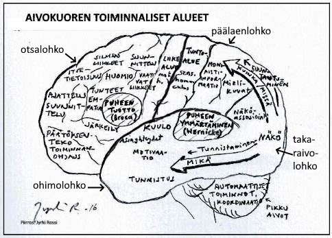
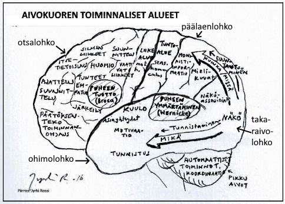
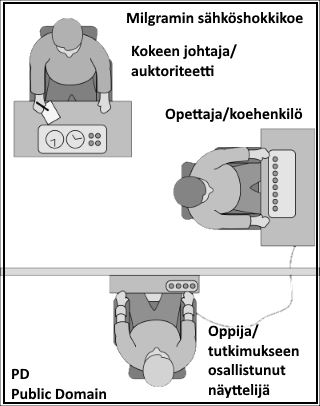
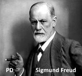
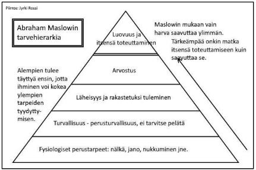
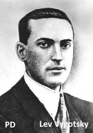

Miten käytät näitä muistiinpanoja tehokkaasti?
- Näiden muistiinpanojen avulla sinun on helppo kerrata kaikki keskeiset asiat psykan eka kurssista
- Kurssimuistiinpanoni sisältävät paljon tietoa. Opettaja voi jättää osan asioista käsittelemättä, sillä niihin palataan kirjoituksia varten uudestaan valtakunnallisissa syventävissä kursseissa (PS2 - PS5)
- Lisäksi vasemmalta palstalta näet, mitä kurssissa erityisesti tulisi käsitellä (ks. keskeinen sisältö). Opettaja voi nostaa esiin joitakin erityisaiheita, joita näissä muistiinpanoissa ei ole.
- Mikäli ja toivottavasti, kun aiot kirjoittaa niin paljon elämässä ja monilla ammattialoilla tarvittavan psykologian oppimäärän, käy kaikki koulusi psykologia kurssit ja erityisesti viisi ensimmäistä valtakunnallista kurssia, sillä niistä tulevat kirjoitusten kysymykset.
- SISÄLLYSLUETTELO TOIMII KESKEISTEN ASIOIDEN KERTAUSLISTANA: Tarkista sen avulla, muistatko asian?
- Alleviivatut asiat ovat tärkeimpiä, mutta esim. psykologian historia osuudessa alleviivauksia ei juurikaan ole tekstin selkeyden vuoksi - ja silti tärkeimmät suuntaukset tulee osata.
- älä opiskele suotta henkilönimiä ellei nimi ole kirjoitettu ISOILLA KIRJAIMILLA!
- KATSO KUVAT - ne kertovat enemmän kuin sanat. HUOM! KÄYTÄN VAIN ILMAISKUVIA ns. PUBLIC DOMAIN eli PD-kuvia SEKÄ ITSE TEKEMIÄ. SIKSI JOISTAKIN TÄRKEISTÄ PSYKOLOGEISTA EI OLE KUVAA OLLENKAAN, KUTEN ESIM. CARL ROGERS TAI ELOSSA OLEVISTA PSYKOLOGEISTA, JOTKA EIVÄT OLE ANTANEET KUVAANSA VAPAASEEN KÄYTTÖÖN.
- Kertaa jokaiselle tunnille sisällysluettelosta (tai wilmasta opettajan antamat läksyt) aina alusta alkaen vilkaisten kaikki aiheet, samalla kokeillen, muistatko vielä tähän asti käydyt asiat
- Mikäli joudut olemaan poissa tunneilta, voit katsoa PS7ABI-kurssin kohdalta PS1-kurssin tiettyä kohtaa vastaavat aihevideot. © Jyrki Rossi, 2016
1. JOHDATUS PSYKOLOGIAAN
1.1 Mitä psykologia on?
- Psykologia tutkii ihmisen toimintaa
- Skeema ja havaintokehä
- Ihminen on psyykkinen, biologinen ja sosiaalinen kokonaisuus
1.2 Ihmisen toiminta on sekä tietoista että tiedostamatonta
- Ihminen on perimän ja ympäristön tuote
- Aivot koordinoivat ihmisen käyttäytymistä
- Tieto ja tilanteiden tulkinta vaikuttaa toimintaasi ja asenteisiisi
1.3 Mielenterveys ja psyykkinen hyvinvointi
- Ihminen pyrkii pitämään yllä positiivista minäkäsitystä ja tilanteen hallinnan tunnetta
- Psyykkinen itsesäätely
1.4 Psykologian osa-alueet
- Kehityspsykologia
- Sosiaalipsykologia
- Kognitiivinen psykologia
- Motivaatiopsykologia
- Persoonallisuuspsykologia
- Neuropsykologia
1.5 Psykologin työ ja psykologian sovellusalat
- Psykologin työ
- Kliininen psykologia
2. PSYKOLOGIA TIETEENÄ
2.1 Näytteitä psykologiatieteestä ja tieteen tekemisen eettisyys
2.2 Psykologisen tutkimuksen vaatimuksia ja peruskäsitteistöä
2.3 Psykologian tutkimusotteet
- Kokeellinen tutkimus
- Korrelatiivinen tutkimus
- Kuvaileva tutkimus
- Tapaustutkimus
2.4 Psykologian tiedonkeruu- eli tiedonhankintamenetelmät
- Kyselyt ja testit
- Haastattelu
- Tarkkailu
- Fysiologiset mittaukset ja aivokuvantaminen
2.5 Psykologisen tutkimuksen eteneminen
3. OPPIMINEN
3.1 Oppimisen hermostollinen perusta
- Oppiminen perustuu hermosolujen synapseissa tapahtuviin muutoksiin
- Assosiatiivinen oppiminen
- Muistijälki
- Hippokampus ja amygdala- eli mantelitumake
- Plastisiteetti
3.2 Erilaisia oppijoita
- Visuaalinen
- Auditiivinen
- Kinesteettinen
- Taktiilinen
3.3 Oppimistyylejä ja oppimiseen vaikuttavia tekijöitä
- Syväsuuntainen oppiminen
- Pintasuuntainen oppiminen
- Strateginen oppiminen
3.4 Miten opin tehokkaasti?
- Minäpystyvyys
- Vanhat tehokkaat menetelmät: kertaus, kerronta ja tarinat, ulkoaoppiminen, kuvat ja piirrokset, mallioppiminen sekä "ympäriinsä kävellen" keskustelu
- Nykyiset tehokkaat menetelmät: kokonaisuuden hahmottaminen, konstruktivismi, konnektivismi, asiantuntijuuden hyödyntäminen, tekemällä itse, yhteistoiminnallinen oppiminen, reflektio
4. KATSAUS PSYKOLOGIAN SUUNTAUKSIIN
4.1 Psykologiatieteen synty
- Wilhelm Wundt ja strukturalismi
4.2 Behaviorismi
- John Watson ja Pikku-Albert
- Ivan Pavlov ja klassinen ehdollistuminen
- B.F. Skinner ja väline-ehdollistuminen
- Albert Bandura ja mallioppiminen
4.3 Psykodynaaminen suuntaus
- Sigmund Freud ja psykoanalyysi
- Tietoisuuden tasot
4.4 Hahmopsykologia (eli Gestalt-psykologia)
- W. Köhlerin simpanssikokeet
- Hahmottamisen perusperiaatteet
4.5 Humanistinen psykologia
- Abraham Maslowin tarvehierarkia
- Carl Rogersin asiakaskeskeinen terapia
4.6 Kognitiivinen psykologia
- Ebbinghaus ja Bartlett sekä muistikokeet
- Tiedon vastaanotto, käsittely ja varastointi
4.7 Sosiokognitiivinen suuntaus
- Albert Bandura ja minäpystyvyys
4.8 Sosiokulttuurinen psykologia
- Lev Vygotsky ja oppiminen
4.9 Biologinen psykologia (evoluutiopsykologia, neurotieteellisyys)
- Taistele tai pakene
- Aivot ja hermosto
4.10 Positiivinen psykologia
- Psykologian tulisi korostaa positiivisia asioita
5. PSYKOLOGIATIEDE KOSKETTAA ELÄVÄÄ ELÄMÄÄ
5.1 Aggressiivisuus
- Aggressiivisuus on uhkaava käytöstä
- Perimän ja ympäristön vaikutus
- Testosteronin vaikutus
- Frustraatio-aggressio -hypoteesi
- Väkivaltaisten tietokonepelien vaikutus
5.2 Jännittäminen
- Luonnollinen reaktio
- Fyysinen, psyykkinen ja sosiaalinen taso
- Autonomisen hermoston vaikutus
- Jännittämisen lieventäminen
5.3 Riippuvuudet
- Mielihyvätumake
- Päihderiippuvuus
- Nettiriippuvuus
- Peliriippuvuus
5.4 Syömiskäyttäytyminen
- Homeostaasi
- Anoreksia, bulimia ja ortoreksia
- Liikalihavuus
5.5 Rakkaus
- Rakkaus on syvää kiintymystä
- Robert Sternbergin rakkauden kolmiteoria ja "rakkaus tarinana"
- Feromonit
5.6 Onnellisuus
- Onnellisuus läpitunkevaa hyvyyden tunnetta
- Onnellisuuteen liittyvät perusasiat Myersin mukaan
- Positiivisuus kaikessa onnen avaimena
5.7 Sosiaalinen vuorovaikutus
- Sosiaalipsykologian tutkimuskohteet
- Lukiolaisen sosiaalisia suhteita
- Roolit
- Asenteet
- Stereotypiat
- Nonverbaalisen viestinnän merkitys
© Jyrki Rossi, 2016
1. JOHDATUS PSYKOLOGIAAN
1.1 Mitä psykologia on?
• Psykologia = (kr.) psykhe eli sielu, mieli ja logos eli oppi (sielutiede) eli "oppi ihmismielestä"
• Psykologia tutkii ihmisen toimintaa, joka on lähes aina tavoitteellista. Miksi ihminen käyttäytyy tietyllä tavalla tietyssä tilanteissa?
• Tavoitteellinen toiminta on ympäristöön sopeutumista (vrt. evoluutio "pysy elossa" ja "jatka sukua").
• Psykologia on nuori tieteenala. Lähtökohtana saks.
Wilhelm WUNDTin perustama kokeellisen psykologian laboratorio v. 1879 Leipzigiin.
• Psykologia kuuluu empiirisiin eli kokemusperäisiin tieteisiin (tietoa hankitaan tieteen keinoin havainnoimalla ihmisiä ja ympäristöä).
• Nykypsykologia tarkastelee ihmistä erityisesti aivojen (neuropsykologian) ja tiedollisen toiminnan (kognitiivisuus) ja sosiaalisuuden näkökulmasta.
• Ihminen on siis
psyykkinen (mieli - ajattelu, tunteet), biologinen (fyysinen - hermosto, koko elimistö) ja sosiaalinen (toiset ihmiset, ympäristö ja kulttuuri) kokonaisuus.
• Psyykkinen olemus sisältää: tiedonkäsittelyn (havaitseminen, muisti, ajattelu, kieli), tunteet (eli emootiot) ja motiivit (toiminnan psyykkiset syyt).
• Ihmisen toimintaa ohjaavat
skeemat eli sisäiset mallit
•
SKEEMAT ovat yksilön muistissa oleva kokemusten, tietojen, taitojen ja toimintojen varasto, jota käytetään toiminnan ohjauksessa. (Skeema-käsitteen "loi" filosofi
Immanuel Kant, mutta psykologian puolella sen otti varhain käyttöön lapsipsykologi
Jean PIAGET, kognitiivisen kehityksen tutkija).
• Skeemaan sisällytettään mm.:
a) skriptit eli toiminnan käsikirjoitukset (esim. autolla ajo, kouluruokailussa käyttäytyminen)
b) kognitiiviset kartat (tilasta ja paikasta, esim. koulun "pohjapiirrustus")
c) tietokokonaisuudet (esim. jostakin aiheesta, kuten biologia tai psykologia)
• Sisäiset mallit muokkautuvat
havaintokehässä (
Ulrich Neisser): Kohde (tieto ympäristöstä) > muuttaa > SISäISTä MALLIA > joka suuntaa > Tiedon etsintää > jonka perusteella tietoa valitaan > Kohteesta eli ympäristöstä (esimerkkinä: koripallo-ottelun sääntöjen oppiminen peliä seurattaessa).
 © Jyrki Rossi, 2016
© Jyrki Rossi, 2016
1.2 Ihmisen toiminta on sekä tietoista että tiedostamatonta
• Onko ihminen perimänsä ja aivojensa marionetti-nukke?
- ihminen on perimän (biologiset vanhemmat) ja ympäristön (kasvatus, kulttuuri, kokemukset) vaikuttama ainutlaatuinen yksilö
- susilapset ovat ääriesimerkki ympäristön vaikutuksesta ihmiseen (googlaa kuvahaulla esim. "amala ja kamala")
- ihminen oppii aistiensa kautta tulevan informaation avulla niin tietoja kuin taitojakin (syntyy skeemoja)
- tämä oppimisen kautta tapahtuva kasvu erilaisiksi persooniksi tapahtuu aivojen hermosolujen muovautumisen myötä (plastisiteetti, synapsit, hermoverkot)
- aivojen tärkeys tulee esiin mm. Phineas GAGEn tapauksessa (työtapaturmassa rautatanko lävisti pään ja tuhosi otsalohkoja > miehen persoonallisuus ja tunne-elämä muuttui radikaalisti)
- aivojen eri osat vastaavat eri toiminnoista (esim. aivopuoliskoilla on eri tehtävät, takaraivolohko hallitsee näköaistimukset, päätöksiä teet otsalohkollasi ja nälän tunne syntyy hypotalamus-nimisessä pienessä tumakkeessa aivojen sisäosissa, ks. PS3)
 

- aivoihin voidaan vaikuttaa mm. kemiallisesti (esim. mielialalääkkeet vaikuttavat serotoniini-välittäjäaineen määrään)
• Onko ihmisen toiminta aina tietoista?
- ihminen toimii niin tunteittensa, motiiviensa (tarpeet, tavoitteet) kuin tietonsa (tilanteiden arvioinnin) perusteella
- tunteet eli emootiot ovat usein lyhytkestoisia, kuten ilo, suru, onni tai viha
- se, miten suhtaudut esimerkiksi seurustelun katkeamiseen riippuu paljolti ihmissuhteen tärkeydestä, tunneyhteydestä, yhdessä vieteystä ajasta, mutta erityisesti siitä, miten arvioit tilanteen tiedollisesti (coping, ks. 1.3 psyykkinen itsesäätely)
- aina emme toimi tietoisesti, vaan kiellät vaikkapa seurustelukumppanisi arvon, kun hän jättää sinut (defenssit, ks. 1.3 psyykkinen itsesäätely), vaikka todellisuudessa pidit hänestä kovasti
• Tieto (ja taidot) auttaa ihmistä selviytymään elämän eri tilanteissa
- voit tulkita ihmisiä ja tilanteita pessimistisesti (negatiivisesti) tai optimistisesti (positiivisesti)
-
tilanteiden tulkinta vaikuttaa elämääsi ja hyvinvointiisi
- kun opit tuntemaan erilaisia ihmisiä (vierasmaalaisia, homoseksuaaleja, sairaita jne.) osaat tulkita heitä ja heidän käyttäytymistään paremmin.
© Jyrki Rossi, 2016
1.3 Mielenterveys ja psyykkinen hyvinvointi
• Olemme kaikki erilaisia, joten kestämme eri tavalla vaikeuksia, kriisejä ja stressiä.
• Psykologian keskeinen sovellusala on kliininen psykologia, jossa tärkeintä on mielenterveystyö.
• Psykologian tunneilla voit oppia tuntemaan itseäsi ja siten ymmärtämään omaa toimintaasi, omia reaktioitasi ja näin edistämään jaksamistasi
• Lukion psykologia pyrkii auttamaan sinua löytämään itsellesi hyvän elämän avaimia.
• Minäkäsitys = millainen minä olen? Minäkäsityksen perusta luodaan jo lapsuudessa (perusturvallisuuden synty).
• Itsetunto = tunneperäinen käsitys itsestä ja omasta arvosta.
• Minäpystyvyys = kokemus omasta pystyvyydestä, pärjäämisestä, elämäntilanteiden hallinnasta.
• Ihmisen pyrkimyksenä on siis 1) pitää yllä positiivista minäkäsitystä ja 2) kokea hallitsevansa elämänsä eri tilanteita.
• Kun elämässä kohdataan ongelmia, ihminen turvautuu psyykkiseen itsesäätelyyn, jonka avulla pyritään pitämään yllä psyykkistä tasapainoa:
1) coping eli tilanteenhallintakeinot (tietoista ongelmanratkaisua, keskustelu, järkeily jne.)
2) defenssit eli puolustusmekanismit (tiedostamattomia, kuten torjunta, arvon kieltäminen, selittely jne.).
© Jyrki Rossi, 2016
1.4 Psykologian osa-alueet
• Psykologia jakautuu eri osa-alueisiin, joita lukion kursseilla (suluissa) käsittelemme. Alla on osa-alueen keskeisiä teemoja.
1) Kehityspsykologia (PS2):
- ihmisen elämänkaari kohdusta hautaan
- vauvan fyysinen ja motorinen kehitys
- lapsen persoonallisuuden kehitys
- ihmisen kognitiivinen (eli lähinnä ajattelun ja kielen) kehitys
- ihmisen sosiaalinen kehitys (mm. leikki, nuoruuden kaverisuhteet)
- eri elämänvaiheisiin liittyvä kasvu, kehitys ja kriisit
2) Sosiaalipsykologia (PS5):
- ryhmäkäyttäytyminen, sosiaalinen liittyminen
- ihmissuhteet, perhe, kaverit, roolit
- asenteet
- johtajuus ja valta
- viestintä ja kommunikointi
3) Kognitiivinen psykologia (PS3):
- tiedon vastaanotto eli havaitseminen
- tiedon käsittely eli ajattelu ja kieli
- tiedon varastointi eli muisti
- oppimispsykologia (PS1)
4) Neuropsykologia tai biologinen psykologia (mm. PS2 ja PS3):
- hermosto ja aivot
- aivokuvantaminen
- hormonit, välittäjäaineet, lääkkeet, sairaudet
5) Kliininen psykologia (PS4):
- mielenterveystyö, ennaltaehkäisy, tuki
- mielen sairaudet ja häiriöt
- terapia ja tutkimus
6) Motivaatiopsykologia (PS4):
- motiivit (kuten nälkä, nukkuminen, seksuaalisuus)
- tunteet ja tunneteoriat
7) Persoonallisuuspsykologia (PS5):
- minä
- luonne ja temperamentti
- persoonallisuus ja selitysteoriat.
© Jyrki Rossi, 2016
1.5 Psykologin työ ja psykologian sovellusalat
• Psykologiksi opiskellaan yliopistossa. Jotta psykologina voi toimia, tulee opiskella vähintään filosofian maisteriksi (FM). Opinnot kestävät n. 5-6 vuotta
• Psykologit työskentelevät enimmäkseen terveyskeskuksissa ja sairaaloissa tehden mielenterveystyötä.
- lisäksi heitä voi olla yritysmaailmassa, kouluissa ja työpaikoilla, tutkijoina yliopistoissa, tai heillä on yksityinen yritys
- psykologi auttaa ihmisiä keskustelemalla ja muilla psykologian tarjoamilla keinoilla, mutta hän ei saa määrätä esimerkiksi lääkkeitä
- psykiatri on lääkärinkoulutuksen saanut henkilö, joka on erikoistunut mielenterveyteen ja psykologiaan ja hän voi mm. määrätä lääkkeitä
- psykoterapeuttina voi toimia henkilö, joka on saanut koulutuksensa jälkeen psykoterapeutin oikeudet Valviralta (entinen TEO-keskus). Psykoterapeutin ei tarvitse olla koulutukseltaan psykologi tai psykiatri, vaan vaikkapa erityissairaanhoitaja tai pappi
- mielenterveyshoitaja on sairaanhoitaja, joka on erikoistunut mielenterveystyöhön ja useimmiten nuoret käyvät keskustelemassa juuri mielenterveyshoitajien kanssa.
• Kliininen psykologia tutkii psyykkisten häiriöiden syitä pyrkien ennaltaehkäisyyn ja korjaavaan toimintaan. Kliinistä psykologiaa harjoitetaan mielenterveystoimistoissa ja sairaaloissa (mm. psykoterapia).
• Kasvatuspsykologia keskittyy kasvatuksen ja opetuksen ongelmiin, mm. oppimisvaikeuksien selvittämiseen (koulu- ja perheneuvontatyö). Ammatinvalintapsykologia auttaa sopivan opiskelupaikan tai ammatin löytämisessä.
• Työpsykologia tutkii henkilövalintoja, työtyytyväisyyttä, työn tuottavuutta ja työsuojelua. Organisaatiopsykologia selvittelee tuotanto-organisaation toimintaa, työtapoja, tuottavuutta, henkilösuhteita, johtajuutta ja viestintää.
• Ympäristöpsykologia keskittyy ympäristöjen viihtyvyyden ja tarkoituksenmukaisuuden suunnitteluun.
• Mediapsykologia pyrkii tehokkaaseen viestintään ja mainontaan sekä median negatiivisiin että positiivisiin vaikutuksiin mm. viihdealalla, peliteollisuudessa jne. (vrt. nykyisin yleistynyt some-kulttuuri)
• Liikennepsykologia pyrkii kehittämään liikenneturvallisuutta (reaktionopeus, liikennemerkkien informatiivisuus, nuorten liikennekulttuuri jne.) ja selvittämään tapaturmien syitä.
• Urheilupsykologia pyrkii tehostamaan urheilijan fyysistä suorituskykyä psykologian keinoin sekä tukemaan urheilijaa esimerkiksi loukkaantumisten tai epäonnistumisten yhteydessä.
© Jyrki Rossi, 2016
2. PSYKOLOGIA TIETEENÄ
2.1 Näytteitä psykologiatieteestä ja tieteen tekemisen eettisyys
• Iso osa nykyisestä psykologiatieteestä on aiempien tieteellisten löydösten toistamista nykyaikaan ja kehittelemistä (tiede pohjautuu aiemmille tutkimuksille).
• Uutena psykologiaan on tullut viimeisten vuosikymmenten aikana jatkuvasti kehittyvä aivokuvantaminen
• Psykologiatieteen tulee noudattaa eettisiä periaatteita:
- ihmisen vahingoittaminen ja tarpeettoman kärsimyksen tai esimerkiksi infektioiden tuottaminen eläimille on kiellettyä (psykologiassa tehdään paljon eläinkokeita)
- eläimiä tulee kohdella hyvin ja niiden elinolosuhteet tulee olla hyvät, koe-eläimen lopettaminen tulee tapahtua kivuttomasti
- ihmisille tulee kertoa nykyisin avoimesti tutkimuksen pyrkimykset ja mahdolliset henkiset haittavaikutukset (esim. stressi)
- peruslähtökohta on avoimuus, mutta tästä voidaan poiketa, mikäli tutkimus välttämättä vaatii sitä. Tutkimuksen jälkeen tulee tutkittaville kertoa avoimesti, mistä tutkimuksessa oli kyse ja vastata tutkittavia askarruttaviin kysymyksiin.
• Ekstra: Miksi psykologiassa ei riitä "terve maalaisjärki" (common sense) ja arkiajattelu? Miksi psykologian pitää olla tieteellistä?
- Mielenterveystyötä tekevä psykologi käyttää totta kai myös "tervettä maalaisjärkeä" kohdatessaan asiakkaitaan, mutta hänen diagnoosinsa tulee perustua tieteeseen, kuten lääkäreilläkin. Psykologit voidaan karkeasti jakaa kahteen ryhmään: tutkijoihin (psykologiatieteen lainalaisuuksia tieteellisin menetelmin kehitteleviin miehiin ja naisiin) ja käytännön toimijoihin (praktikoihin, psykologiatiedettä tapauskohtaisesti soveltaviin, ihmisiä hoitaviin psykologeihin).
- Arkiajattelu perustuu usein:
1) Liialliseen omien kokemusten ja havaintojen korostamiseen. Meille on kehittynyt skeemoja, arkitietoa, lapsuudesta saakka siitä, miten asiat ovat ja miten niiden tulisi olla, miten maailma toimii, mikä on hyvää ja huonoa jne. "Isä ei ikinä itkenyt, oli miten vaikeaa tahansa" siis a) itkeminen on heikkouden merkki ja b) mies ei itke.
2) Valikoituun havainnointiin (selektiivisyys) ja selittelyyn. Kiinnitämme huomiomme usein asioihin, jotka kiinnostavat meitä tai, joihin meille on jo kehittynyt oma näkemys, jonka pönkittämiseksi haemme lehdistä ja tieteestäkin valikoiden perusteluja. Hyvä esimerkki on biologian/teologian puolella esiintyvä vahva evoluutio vastaan älykäs suunnittelija (ID, Jumala, kreationismi) väittely. Peliriippuvainen hakee perusteluja pelaamiselleen aiemmista voitoistaan, kavereiden voitoista, RAY:n tukemisesta jne. mutta ei halua myöntää ongelmaansa saati hakea siihen apua.
3) Lyhytjänteisyyteen ja puutteelliseen päättelyyn. Tukeudumme usein helpoimmin muististamme löytyviin esimerkkeihin, ensimmäisiin tai miellyttävimpiin selityksiin, emmekä kyseenalaista omia näkemyksiämme kriittisesti. "Mummo poltti koko elämänsä ajan tupakkaa ja kuoli 90-vuotiaana. Siis tupakka ei ole niin vaarallista." Tai lukiolainen tuomitsee koko oppiaineen opettajansa perusteella, ensimmäisten tuntien perusteella, asian vaikeuden perusteella jne. Tai asenteissa: muslimit tekevät terrori-iskuja, joten onkohan tuokin muslimi terroristi? Tai vielä pahemmin: oikeasti ei varmaan ole yhtään muslimia, joka ei sisimmässään iloitsisi terrorismista.
- Kaikkea ei voi tieteen metodein selvittää. Siksi tehdään ero 1) arvojen (values) ja 2) tieteellisen totuuden (facts) välillä. Arvoihin luetaan useita erilaisia arkiajattelun asioita, kuten "kuoleman jälkeen pääsen taivaaseen" (tiede voi kertoa, mihin lääketieteellisiin faktoihin kuoleman toteaminen perustuu ja mitä elimistössä/lle tapahtuu kuolemassa, mutta ei ota kantaa kuolemanjälkeisyyteen), "on tärkeää lopettaa tupakointi" (tiede selvittää ja kuvailee, miten paljon prosentuaalisesti tupakointi lisää syöpä- ja sydän- ja verisuonisairauksien riskiä, mutta ei sinänsä ota kantaa tupakoimiseen käyttäytymisenä), "nykynuoret ovat masentuneempia kuin me entisajan nuoret" (tiede mittaa nuorten lievää, keskivaikeaa tai vaikeaa masentuneisuutta vuosittain prosentuaalisesti, mutta vertailu mummojen ja pappojen nuoruuden masentuneisuuden ja nykynuorten masentuneisuuden välillä on jo tieteellisesti vaikeampaa kulttuurin, yhteisön elintapojen jne. muuttumisen sekä mittaustapojen variaatioiden eli vaihtelevuuden vuoksi).
- Usein tehdään myös ero 1) tiedostetun ajattelun, jossa tiedän ajattelevani/päätteleväni tiettyä asiaa ja 2) intuitiivisen ajattelun välillä. Intuitiota on pidetty tieteen ongelmana, vaikkakin monet tieteen luovat keksinnöt ja oivallukset ovat syntyneet intuition kautta. Intuitiolla tarkoitetaan ajattelua, jota emme tiedosta, mutta silti toimimme kuin tietäisimme. Intuitiota ei tule pitää pelkkänä tunteiteiden mukaan toimimisena. Intuitiota ja tietoista päättelyä voidaan verrata mm. näin: Intuitiossa tiedän, että tiedän, mutta en tiedä miten tiedän. Tietoisessa päättelyssä tiedän ajattelevani juuri tätä tiettyä ajatusta. (ks. Aalto-yliopiston taiteen tohtori TaT Asta Raami, Älykäs intuitio ja miten käytämme sitä, Kustantamo S&S, 2017).

•
Stanley MILGRAMin sähköshokkikoe (1961/1974)
- eettisesti ongelmallinen: tutkittiin ihmisten tottelevaisuutta, siten että koehenkilö määrättiin antamaan voimakkaita (jopa kuolettavia) sähköiskuja tekaistussa oppimistilanteessa. Koehenkilölle väitettiin, että tutkimuksessa selvitettiin rangaistuksen vaikutusta oppimiseen. Todellisuudessa tutkittiin koehenkilön tottelevaisuutta ja suhtautumista auktoriteettiin.
•
Philip Zimbardon vankilakoe (1971)
- eettisesti ongelmallinen: tutkittiin ihmisten roolin ja valta-aseman merkitystä Stanfordin yliopistolle rakennetussa vankilassa, jonne vartijoiden ja vankien rooliin valittiin yhteensä 24 nuorta miesopiskelijaa, jotka oli ennen koetta testattu normaaleiksi ja terveiksi
- vangit puettiin numerolla varustettuun kaapumaiseen pyjamaan, vartijoille annettiin uniformumainen paita, pamppu ja pilli sekä aurinkolasit.
- kahden viikon pituiseksi tarkoitettu koe keskeytettiin vartijoiden väkivaltaisuuksien vuoksi 6 vuorokauden kuluttua.
•
Craig Anderson ja
Karen Dill: väkivaltaisten videopelien vaikutukset pelaajaan (1999/2002)
- eettisesti hyväksyttävä: 210 opiskelijaa laitettiin pelaamaan saman tyylisiä videopelejä: Wolfenstein (väkivaltainen, First person shooter) tai Myst (väkivallaton) peli (ns. toinen tutkimus, 1. tutkimus oli kyselytutkimus aggressiivisuudesta)
- pelaamisen jälkeen koehenkilöt laitettiin uuteen pelitilanteeseen, reaktionopeustestiin, jossa heille aiheutettiin tarkoituksellisesti mahdollista aggressiivisuutta kovalla ääni-efektillä, mikäli he hävisivät vastapuolen näkymättömälle pelaajalle (todellisuudessa kone)
- tutkimuksen päätelmät: aggressiivisia pelejä pelaavat ovat herkempiä väkivaltaiselle käyttäytymiselle myös pelaamisen ulkopuolella, toiseksi koulumenestys voi heikentyä, tosin yleisesti liiallisen pelaamisen vaikutuksesta. Lisäksi väkivaltapelit aiheuttavat aggressiivisuuden kasvua erityisesti aggressiivisemmilla henkilöillä ja osin muillakin interaktiivisuutensa vuoksi enemmän kuin esimerkiksi elokuvat. Pelissä väkivaltaiseen hahmoon on helpompi samastua (first shooter) kuin elokuvissa, pelissä edetään väkivallan avulla uudelle tasolle ja kolmanneksi pelien addiktoiva yleisluonne.
© Jyrki Rossi, 2016
2.2 Psykologisen tutkimuksen vaatimuksia ja peruskäsitteistöä
• Tieteellisen psykologisen tutkimuksen tulee olla:
- suunnitelmallista ja järjestelmällistä eli tarkat tutkimussuunnitelmat ja koeasetelmat sekä systemaattinen tiedonkeruu varmentavat tulosten oikeellisuutta.
- luotettavaa, jolloin toteutuu: 1) reliabiliteetti = pysyvyys eli tutkimus/mittaus toistettaessa antaa vastaavat tulokset ja 2) validiteetti = pätevyys eli tutkimus/testi mittaa sitä, mitä se on tarkoitettukin mittaamaan, jolloin saadaan käytäntöä vastaavaa tietoa.
- objektiivista eli vältetään tutkijan subjektiivisuuden vaikutus tuloksiin esim. tutkijan omat näkemykset tai teoriasuunta ei saa vaikuttaa lopputulokseen (tutkittavan henkilön subjektiivisuuden vaikutus tulee lähes aina mukaan psykologiatieteessä, siksi ihmistä pyritäänkin ennen kaikkea ymmärtämään eli tutkimus on hermeneuttista).
- toistettavaa, jolloin kuka tahansa voi toistaa tutkimuksen ja tulokset vastaavat pääpiirteissään alkuperäistä tutkimusta
- yleistettävää, jolloin laajemmat käyttäytymiseen liittyvät lainalaisuudet voidaan tarpeeksi suuren otoksen (osallistujamäärän) ansiosta liittää koskemaan ainakin maantieteellisesti ja kulttuurisesti samaa ihmisryhmää (yleistettävyyden vaatimus on psykologia-tieteessä hankala, koska jo yksi yksilö muuttuu elämänsä aikana niin käyttäytymisessä kuin persoonana)
- raportoitavaa, joka kuuluu osana kaikkeen tieteelliseen tutkimustoimintaan, jotta tulokset päätyvät alan ammattilaisten analysoitaviksi, tarkistettaviksi ja hyödynnettäviksi jatkotutkimuksia varten.
• Tutkimuksen muuttuja = mitattava ilmiö esim. älykkyys tai ujous (taustamuuttujia ovat usein tutkittavan ikä, sukupuoli, sosio-ekonominen asema, maantieteellinen ja kulttuurinen sijainti jne.)
• Operationalisointi = toimenpiteet, joilla tutkimuksen muuttujat pyritään ilmaisemaan mitattavassa muodossa (esim. Miten voisit mitata ujoutta tai johtamistaitoa? Ujoutta ei voi mitata esim. punastumisesta esiintymistilaisuudessa, vaan on luotava mittari esim. kysely, jonka kysymykset liittyvät ujouteen ja sosiaalisuuteen)
• Kvantitatiivinen eli määrällinen tutkimus hyödyntää tilastomatematiikkaa. Siinä pyritään kuvailemaan (deskriptiivinen tutkimus) esimerkiksi kuinka moni lukiolainen kärsii keskivaikeasta tai vaikeasta masennuksesta (THL:n kouluterveyskyselyt). Kvalitatiivinen eli laadullinen tutkimus pyrkii syvempään tulkintaan ilmiöstä, selvittämään esimerkiksi syitä lukiolaisten masennukseen (sekä deskriptiivistä tutkimusta, mutta mahdollisesti myös ns. normatiivista tutkimusta, jolloin pyritään ehkäisemään nuorten masennusta).
• Tiedonhankintaan käytetään erilaisia tutkimusmenetelmiä (= systemaattinen keino, jolla tutkija saa tietoa tutkittavasta ilmiöstä).
© Jyrki Rossi, 2016
2.3 Psykologian tutkimusotteet
• Tutkimusmenetelmän avulla tutkija pyrkii ratkaisemaan tutkimusongelman käyttäen tiettyä tutkimusotetta ja tarkkaan valittuja tiedonkeruumenetelmiä.
• Tutkimusotteita ovat:
1. Kokeellinen tutkimus
- ilmiöitä selvitetään yksinkertaistetuissa olosuhteissa tarkan tutkimussuunnitelman puitteissa, jossa häiriötekijät on pyritty poistamaan tarkoin (laboratoriotutkimuksessa tai luonnollisessa kontrolloidussa tilanteessa vrt. Zimbardon toteuttama vankilakoe, Schachterin ja Singerin adrenaliinikoe tai Milgramin sähköshokkikoe)
- pyritään selvittämään kahden muuttujan välinen yhteys (syy-seuraus -suhde, aiheuttaako muuttuja x, tapahtuman y)
2. Korrelatiivinen tutkimus
- nykyisin erittäin yleinen tutkimusote ihmistieteissä
- selvitetään muuttujien välisiä riippuvuussuhteita matemaattisin, tilastollisin menetelmin
- selvitetään asioiden tilastollista esiintymisyhteyttä (onko x:llä ja y:llä jokin yhteys toisiinsa?)
- korreloiko esim. opiskelijan tunneilta poissaolot koulumenestykseen?
- positiivinen korrelaatio = x:n kasvaessa y:kin kasvaa esim. usein pituus ja paino korreloivat keskenään positiivisesti, mitä pitempi sen painavampi.
- negatiivinen korrelaatio = x:n kasvaessa y pienenee esim. tunneilta poissaolo ja kouluarvosanat: mitä enemmän poissa tunneilta, sitä paremmat kouluarvosanat (ei siis toteudu, vaan muodostuu negatiivinen korrelaatio).
- korrelaatio ilmaistaan pistearvoilla 0.0-1.0, jolloin voimakas korrelaatio on muuttujilla, kun korrelaatio on sama tai enemmän kuin 0.8, huomattava 0.6-0.8, kohtalainen 0.3-0.6 ja merkityksetön (ts. ei korrelaatiota), jos alle 0.3. (Katso halutessasi aiheesta enemmän tilastomatematiikan kurssikirjoista)

3.
Kuvaileva tutkimus
- pyrkii tutkimuskohteen tarkkaan kuvailemiseen ja ymmärtämiseen
- useimmiten kvantitatiivista eli määrällistä ts. saadaan tilastotietoa (myös kvalitatiivista)
- kuvaillaan, miten asiat ovat: esim. ilmiön tai tapahtuman yleisyys, kehitys, tunnusomaiset piirteet jne.
- esim. kuinka suuri prosenttiosuus Suomen lukiolaistytöistä kärsii vaikeasta masennuksesta, toisaalta voidaan selvittää myös mistä tämä masennus voi johtua.
4.
Tapaustutkimus
- koskee yksilöä (yksilötutkimus) tai tiettyä ryhmää
- mm. psyykkisten häiriöiden diagnosoinnissa (kuuluisa "case" oli esim. Anna O:n tapaus,
Freudin työtoverin
Breuerin potilaan vaikea mielenterveysongelma ja sen selvittäminen)
- tiedonhankintamenetelmiä: biografiat eli elämänkerrat, persoonallisuus-, älykkyys- ja kykytestit, neuropsykologiset testit, haastattelut ja tarkkailu
© Jyrki Rossi, 2016
2.4 Tiedonhankinta- eli tiedonkeruumenetelmiä ovat:
• Psykologisessa tutkimuksessa voidaan käyttää erilaisia tiedonhankinta- eli tiedonkeruumenetelmiä. Tutkimus voidaan toteuttaa vain yhtä menetelmää käyttäen tai sitten tulosten luotettavuuden varmistamiseksi, voidaan käyttää useampaakin menetelmää.
• Menetelmän valinta riippuu erityisesti tutkittavasta ilmiöstä ja tutkittavasta kohteesta (yksilöstä, ryhmästä).
1. Testit
• Erilaisia testejä on nykyään olemassa paljon, koska tietokoneaikakaudella niiden tekeminen (kuten kyselyjenkin) on helppoa ja edullista.
• älykkyys-, kyky- ja muistitestit sisältävät erilaisia älykkyyteen tai muistiin liittyviä aiheita, kuten matemaattinen lahjakkuus, kielellisyys, hahmottaminen, avaruudellisuus, kuvamuisti jne.
- Tunnetuimpia älykkyystestejä ovat ns. WAIS eli Wechslerin aikuisille suunnatut älykkyystestit (nykyisin käytössä WAIS-IV, joka kehitetty vuonna 2008).
- Lyhtykestoisen eli työmuistin testinä toimii yksinkertainen numerotesti, jossa sinulle luetaan tasaisella tahdilla 4-8 numeron sarjoja ja sinun tulee yrittää muistaa numerot ulkoa ääneen toistamalla (esim. 5-3-8-1-7-0). Näin saadaan selville työmuistin kapasiteetti eli muistisilta.
• Persoonallisuustestejä on kehitelty useita erilaisia ja niiden tavoitteena on a) selvittää henkilön persoonallisuuden eri piirteitä (luonnetestit, kuten Big Five) ja b) syväluodata henkilön tunne-elämää ja ydinpersoonallisuutta, joka vaikuttaa yksilön käyttäytymiseen (esim. kuvafrustraatiotestit)
-
Rorschachin muisteläiskätesti, jossa käytetään 10 kuvataulua, joissa on symmetrinen musteläiskä. Testin käyttäjän tulee olla kyseisiin testeihin koulutuksen saanut ammattilainen, jotta testin avulla voisi hahmottaa tutkittavaan persoonallisuutta, tunteita, vahvuuksia tai vaikkapa stressinsietoa.
-
Murrayn TAT (Thematic Apperception Test) aikuisille ja CAT (Children's Apperception Test) lapsille -testit, joissa tutkittavalle näytetään 30 kuvataulua, joiden perusteella pyritään määrittelemään henkilön persoonallisuuspiirteitä ja esim. voimavaroja.
-
Rosensweigin sarjakuvatesti, jossa tutkittava kirjoittaa vastauksen puhekuplaan tietyssä turhautumistilanteessa (frustraatio).
-
Paul Costan ja
Robert McCraen Big Five eli Viisi Suurta -testi, jossa on 50 väittämää, joihin tutkittava vastaa ja näiden väittämien perusteella saadaan tulokset viidestä ihmisten persoonallisuutta kuvaavasta keskeisestä alueesta (kuten ulospäinsuuntautuneisuus tai avoimuus) (huom. erilaisia Big Five -teorioita ovat kehitelleet monet muutkin psykologit, kuten
J.M.Digman tai
L.Goldberg.
Costan ja McCraen teoria on näistä tunnetuimpia).
• Hyvän testin vaatimukset:
- mitattavat muuttujat on operationalisoitu
- luotettavuus (reliabiliteetti) eli rinnakkais- ja uusintamenetelmillä tulisi saada sama tulos
- pätevyys (validiteetti) eli testin tulee mitata sitä ominaisuutta, jota se on tarkoitettu mittamaan.
- standardointi eli testin on eroteltava yksilöt toisistaan ja testi soveltuu juuri tietyn aikakauden ja alueen ihmisille (testille lasketaan normiarvo, joka kertoo testin keskimääräisen tuloksen)
- objektiivisuus eli testaaja ei saa vaikuttaa tuloksiin
- kysymysten oltava selkeitä ja yksiselitteisesti tulkittavia
2.
Kysely
• Kyselylomakkeilla hankitaan tietoa väestön asenteista, arvostuksista tai erilaisista tottumuksista (äänestäminen, TV:n katselutottumukset jne.).
• Nykyisin kyselylomakkeiden sijaan kysely toteutetaan kätevästi nettikyselynä, jolloin tietokone laskee tutkijalle keskiarvoja ja vaikkapa korrelaatioita suoraan kyselyn edistyessä.
• Kyselylomakkeet ovat joko
strukturoituja (valmiit vastausvaihtoehdot/ esim. väittämä: "Pidän mielelläni esitelmiä koulussa", ympäröi oikea vastausvaihtoehto: 1=täysin eri mieltä, 2=eri mieltä, 3=samaa mieltä, 4=täysin samaa mieltä) tai
strukturoimattomia (avoimet kysymykset, joihin tutkittava kirjoittaa vapaasti vastauksensa/ esim. "Esitelmien pitäminen______").
3.
Haastattelu
• Ihmisten mielipiteiden kartoittaminen, soveltuvuus työhön tai koulutukseen jne.
• Diagnosoidaan ihmisen ongelmia ja persoonallisuutta oikean hoidon löytämiseksi (erittäin tärkeä kliinisen psykologian menetelmä).
• Ongelmana haastattelijan kokemusten (subjektiivisuus) vaikutus haastateltavan mielipiteiden tulkinnassa.
4.
Tarkkailu eli observointi
• Hankitaan tietoa henkilöstä haastattelun tai muun testauksen yhteydessä. Erittäin tärkeä käytettäessä kuvatestejä tms.
• Tarkkailu voi olla osallistuvaa tai ulkopuolista tarkkailua
- osallistuvassa tarkkailussa tutkija voi hakeutua esim. päiväkotitädiksi tarkkaillakseen tietyn lapsen käyttäytymishäiriöitä. Havainnoija ei ole tällöin passiivinen sivustaseuraaja, vaan aktiivinen kanssaeläjä.
- ulkopuolisessa tarkkailussa tutkija saattaa seurata esim. koululuokan oppilaiden työskentelyä lasiseinän takaa tai istumalla luokan takaosassa osallistumatta toimintaan.
• Introspektio: yksilö kuvaa ja tarkkailee omia elämyksiään, tunteitaan ja kokemuksiaan; menetelmä on rajallinen mm. subjektiivisuuden vuoksi (latinaksi intro merkitsee “sisäänpäin” ja spectare “katsoa”).
• Retrospektio: yksilö muistelee elämänkertaansa, elämänsä huippukohtia jne. (retrospectare merkitsee “taaksepäin katselua”).
5.
Fysiologiset mittaukset ja erilaiset aivojen kuvantamismenetelmät
• Nykyisin yhä tärkeämmäksi noussut tiedonkeruumenetelmä, sillä monet psyykeeseen liittyvät seikat voidaan paikantaa myös tarkoilla aivokuvantamismentelmillä (tunne-elämän häiriöt, skitsofrenia, puheen- ja kielen häiriöt eli afasiat, muistihäiriöt eli amnesiat jne.).
• Käytetään psykologisten tutkimusten apuna esim. laboratoriotutkimuksissa.
• Käyttäytymishäiriön tausta saattaa olla fysiologinen (esim. hormonaalinen).
© Jyrki Rossi, 2016
2.5 Psykologisen tutkimuksen eteneminen
• Tutkittavan
aiheen valinta (esim. nuorten miesten rahapeliriippuvuus - aihe usein riippuvainen tiedeyhteisön tai tutkimuksen tilaajan tutkimustarpeista tai tutkijan kiinnostuksen kohteista)
•
Määritellään tutkimusongelma (täsmennetään ongelmaa varusmiesikäisiin nuoriin miehiin ja heidän rahapeliriippuvuuteen)
- määritellään hypoteesi eli olettamus, joka on usein sidoksissa havaittuun käytäntöön tai aiempiin tutkimuksiin (3 % nuorista miehistä kärsii vaikeasta peliriippuvuudesta, joka tuo mukanaan rahaongelmia ja esim. pikavippikierteen)
•
Valitaan tutkimus- ja tiedonkeruumenetelmät (kyselytutkimus, jolloin tulee laatia täsmällinen kyselylomake selvittämään ongelman eri ulottuvuuksia), pohditaan mitä asioita erityisesti halutaan tutkimuksessa selvittää (rahapelikoneriippuvuutta, nettirahapeliriippuvuutta, peliajankohtaa, pelaajan ihmissuhteita, mitä pelejä, paljonko pelaa lainarahalla, mitkä ovat taustamuuttujat eli ikä, koulutus, ammatti, taloudellinen tilanne, perhetausta, mitä ongelmia riippuvuus on nuorelle tuonut jne.)
•
Valitaan otos eli tutkittavat henkilöt (aiheen mukaan satunnaisotannalla eri varuskunnista, erilaisista elinympäristöistä, suur- ja pikkukaupungeista, maaseudulta, eri puolilta Suomea riittävä määrä esimerkiksi 2000 varusmiestä, jotta tutkimus olisi tarpeeksi luotettava. Otokseen vaikuttaa tutkimuksen tarkoitus, rahoitus ja pyrkimys mahdollisimman hyvää lopputulokseen. Joskus käytetään ns. mini-Suomi -tutkimusta, jossa tutkittavien ikä ja elinolosuhteet vastaavat keskimäärin kaikkien suomalaisten 18-25 vuotiaiden vastaavia) - katso tässä esimerkkinä yläkoulu-, lukio- ja ammattikouluikäisiä koskeva
THL:n kouluterveyskysely, jossa kysytty myös peliriippuvuutta.
•
Tutkimuksen toteutus ts. kyselyn teettäminen (nettikyselynä tai kyselylomakkeilla varuskunnassa tietyn oppitunnin aikana)
•
Tulosten analysointi tietotekniikan avulla (kyseessä on kvantitatiivinen tutkimus, jossa löydetään korrelaatioita ja saadaan todenmukainen kuvaus varusmiesten rahapeliriippuvuudesta).
•
Johtopäätösten tekeminen tuloksista ts. vastaako saatu todellisuutta (käytäntöä) vastaava tutkimustulos alussa esitettyä hypoteesiä? Nostetaan esille tärkeät ja yhteisölle tarpeelliset tutkimuksen yksittäistulokset ja korrelaatiot.
• Tutkimustulosten
raportointi kirjallisessa (esim. gradu eli yliopistollinen lopputyö, alan julkaisu, Psykologia-lehti) tai digitaalisessa muodossa (esim. pdf-formaatissa aihekohtaisilla sivuilla).
• Mahdollinen käytäntöön puuttuminen ei tavallisesti kuulu tutkimuksen piiriin, mutta esimerkiksi jonkin yrityksen tilaamat tutkimukset saattavat olla normatiivisia eli ohjeellisia (esimerkkitapauksessa puolustusvoimat pyrkisi vaikuttamaan valistuksellisesti nuorten miesten rahapeliriippuvuuden vähentämiseen).
© Jyrki Rossi, 2016
3. OPPIMINEN
3.1 Oppimisen hermostollinen perusta
• Oppiminen on muistissa tapahtuva suhteellisen pysyvä muutos, jonka ympäristö eli kokemukset aiheuttavat. Ihminen oppii niin tietoja kuin taitoja, tapoja kuin tottumuksia. Opittaessa sekä syntyy uusia skeemoja että vanhat skeemat kehittyvät/muuntuvat.
• Oppimisen perustana on muisti. Ilman muistia ihminen tai eläin ei voi oppia mitään.
•
Oppiminen perustuu hermosolujen synapseissa tapahtuviin muutoksiin (ks. hermosolun ja synapsin toiminta): a) hermosolujen välisiä yhteyksiä eli synapseja syntyy lisää ja b) synapsi laajenee, jolloin kemiallisten välittäjäainemolekyylien vaikutus lisääntyy edistäen sähköistä viestin kulkua. Hermosolun toiminta on on/off-toimintaa, jossa välittäjäaineet, joko estävät viestin kulun tai kiihdyttävät kulkua.
•
Assosiatiivinen oppiminen tarkoittaa sitä, että hermosolu saa viestisyötteitä useista hermosoluista (sadoista) yhtäaikaa ja kuljettaa sitten viestiä eteenpäin. Kun sadat miljardit hermosolut toimivat tarpeeksi pitkään yhteydessä toisiinsa, tietyt kytkennät (synapsit ja niiden toiminnot) vakiintuvat ja syntyy ns.
muistijälki.
• Assosiatiivisessa oppimisessa eläin tai ihminen synnyttää mielleyhtymän (eli assosiaation) kahden tai useamman asian välille (esim. koira kuulee omistajan koskettavan talutushihnaan > ollaan lähdössä ulos)
• Ei-assosiatiivinen oppiminen tarkoittaa joko tottumista (habituaatio) tai herkistymistä (esim. totut huoneessasi olevan kellon tikitykseen eikä se häiritse sinua)
• Opittaessa tapahtuu pysyvä muutos hermoverkoissa (opitaan tietyt taidot tai tiedot jne.)
• Kun hermosolujen välisten synapsien kytkennät muovautuvat pysyviksi, puhutaan pitkäkestoisesta eli säilömuistista.
• Muistijälkeä on yritetty etsiä mm. kanikokeella (
McCormick & Thomson, 1984, silmään puhallettiin ilmaa, joka aiheutti kanilla silmän räpäytyksen. Ilman puhaltamista ennen annettiin äänimerkki, jolloin kani oppi eli klassisesti ehdollistui sulkemaan silmänsä ennen ilman tuloa > kanille oli syntynyt muistijälki - vrt.
PAVLOVin koirakoe). Muistijäljen huomattiin syntyneen erityisesti pikkuaivoihin, joka on automatisoituneiden toimintojen ohjauskeskus.
• Myöhemmin oppimiseen keskeisesti vaikuttaviksi aivojen osiksi on todettu
hippokampus, joka auttaa muistiaineksen kiinnittymisessä työmuistista säilömuistiin, sekä amygdala- eli mantelitumake, joka vaikuttaa tunnepitoisten tapahtumien kiinnittymisessä muistiin. Mikäli hippokampus on vaurioitunut, ihminen ei kykene oppimaan mitään uutta tietoa (vrt. kuuluisa tapaus H.M. eli
Henry Molaison, jonka epilepsiakohtauksia rauhoitettiin hippokampus-leikkauksella, brittisäveltäjä
Clive Wearing, jolta tulehdus tuhosi hippokampuksen).
•
Plastisiteetti = hermosolujen ja hermoverkon (tai yleensä aivojen) kykyä muovautuvuuteen.
• Herkkyyskausi on aika, jolloin lapsella tietyn taidon, kuten kävelemisen tai puheen oppiminen on helpointa (aivoalueen plastisiteetti on biologisesti määräytynyt tietylle kehityskaudelle)
• KATSO klassinen ehdollistuminen, välineellinen ehdollistuminen ja mallioppiminen luvusta 4.2 Behaviorismi.
© Jyrki Rossi, 2016
3.2 Erilaisia oppijoita
• Ihmisten kyky oppia vaihtelee suuresti riippuen niin perimästä kuin ympäristötekijöistä, älykkyydestä, virikkeisyydestä, sairauksista jne.
- Esimerkiksi Downin syndrooma- eli mongoloidilapset (21. kromosomi kolminkertaisena) kykenevät oppimaan tapauskohtaisesti auttavasti lukemaan ja kirjoittamaan tai ei edes puhumaan.
- Erityislahjakkuudet, kuten ns. autistinerot (
Kim Peek, Rainman) saattavat oppia ulkoa lähes kaiken lukemansa, esimerkiksi yli 10 000 kirjaa tai vaikkapa puhelinluettelon kaikki tiedot
- ADD- (attention deficit disorder) tai ADHD-lapset (attention deficit and hyperactivity disorder) kärsivät yliakviitivuudesta ja tarkkaavaisuus- ja keskittymishäiriöistä eivätkä siksi kykene välttämättä oppimaan samalla tavalla kuin muut lapset (aiemmin tässä yhteydessä puhuttiin myös lukihäiriöstä käyttäen termiä MBD eli minimal brain dysfunction, joka vastaa lähinnä nykyistä ADD-käsitettä)
• Nykyisin katsotaan, että olemme erilaisia oppijoita, ja olisi tärkeä löytää omin oppimistyylimme.
•
Visuaalinen oppija - muistaa näkemällä
- Olet ilmeisesti visuaalinen oppija, jos muistat kokeessa kirjan sivun ja sivulla olevat kuvat, mutta et välttämättä asiaa, joka sivulla on mainittu.
- Oppii ja muistaa katselemalla, näkemällä.
- Oppii kuvien ja piirrosten avulla > asiat kannattaisi piirtää kuviksi, hahmoiksi, kaavioiksi tai vaikka käsitekartoiksi.
- Myös värit auttavat muistamisessa.
- Suuri osa ihmisistä on visuaalisesti oppijoita, sillä näköaisti on tärkein aistimme.
•
Auditiivinen oppija - muistaa kuulemalla, puhumalla (ja osin lukemalla ja erityisesti ääneen)
- Jos olet auditiivinen oppija, sinun tulisi olla jokaisella oppitunnilla paikalla kuulemassa opettajan esitystä opittavasta aiheesta.
- Sinua hyödyttää eriyisesti audio- ja videomateriaali, jolla asiat selitetään käsitteiden/kielen avulla.
- Oppii ja muistaa puheen, siihen liittyvät äänenpainot ja korostukset, keskustelut.
- Kyselemällä kaverisi kanssa läksyjä ääneen, opit ne paremmin.
•
Kinesteettinen oppija - muistaa asiat liikkeen ja kosketuksen kautta
- Opit erityisesti tekemällä asioita, esim. kokeellisessa kemiassa, vierailuilla uskonnollisten yhteisöjen tiloihin jne.
- Opiskellessa kannattaa olla liikkeessä - ts. esim. polkea kuntopyörää tai juoksulenkillä kuunnella korvakuulokkeiden kautta materiaalia.
- Häly ja rauhattomuus tunneilla ehkäisee oppimista (herkkä tunneilmaston aistija) > tekee levottomaksi, mutta toiminnallinen oppimiseen keskittynyt ympäristö aktivoi oppimaan.
- Olet kinesteettinen oppija, jos olet yleisesti hyvä fyysisissä asioissa, liikunnallinen tai paljon muuten liikkeessä.
• Nykyisin saatetaan lisätä vielä neljäs muoto:
taktiillinen oppija, jonka oppimista edistää näpertely, koskettelu, askartelu, esim. tunnilla kutominen, piirtely. Taktiilinen oppija hyötyy ja pitää port folioiden ja leikekirjojen tekemisestä. Taktiilinen oppija käyttää käsiään, ei koko kehoaan oppimisen apuna.
• MUISTISääNTö: VAKT (visuaalinen, auditiivinen, kinesteettinen, taktiilinen) tai VAKTa (ruotsiksi "tähystäjä, vartija", islanniksi "monitori")
© Jyrki Rossi, 2016
3.3 Oppimistyylejä ja oppimiseen vaikuttavia tekijöitä
• Jokaisella ihmisellä on oma oppimistyylinsä, jolla hän saavuttaa parhaiten oppimistuloksia. Tämä oppimistyyli tai -tapa tulisi itse tunnistaa, jolloin puhutaan ns. metakognitiosta eli kyvystä tiedostaa omat kognitiiviset toimintonsa (ajattelu, muisti, oppiminen, havainnointi, kielellisyys eli TIEDOT ja TAIDOT)
• Edellä mainitut visuaalinen, auditiivinen, kinesteettinen ja taktiilinen oppija ovat myös oppimistyylejä.
• Oppimisstrategiat: Pintasuuntainen oppiminen/prosessointi tarkoittaa opittavan asian mieleen painamista "pinnallisesti" eli lähinnä ulkoa oppien. Syväsuuntainen oppiminen/prosessointi tarkoittaa asian oppimista "syvällisesti", asia ymmärtäen ja kokonaisuus hahmottaen liittäen asia laajempiin yhteyksiin. Strateginen eli suunnitelmallinen oppiminen/prosessointi tarkoittaa tapauskohtaisesti jomman kumman edellä mainitun valitsemista. Esimerkiksi sinun tarvitsee muistaa vain lyhyen aikaa esim. ostoslista tai seuraavan tunnin asiat, joten käytät pintasuuntaista menetelmää. Jos taas luet psykologian ylioppilaskirjoituksiin, on sinun tärkeää hahmottaa kokonaisuus vaikkapa aiheesta oppiminen ja se, miten tietyt yksittäiset asiat tähän kokonaisuuteen ymmärrettävästi liittyy.
• Oppimiskultturilla tarkoitetaan sitä, miten oppiminen tai opettaminen vaihtelee kulttuureittain ja ympäristöittäin. Monissa maissa esimerkiksi naisilta saattaa olla opiskelu kokonaan kiellettyä tai opetus on hyvin autoritaarista, opettaja sanelee tai jopa opetellaan ulkoa vaikkapa Koraania tai Raamattua. Länsimaissa on pääsääntöisesti ns. demokraattinen oppimiskulttuuri, jossa opiskelijat voivat itse osallistua opetuksen suunnitteluun sekä oppimistapahtumaan.
• Yleensä oppimistulos on riippuvainen:
1) Oppijan
a) vireystilasta eli aktivaatiosta
- alhainen vireystila madaltaa suoritusta
- vireyteen vaikuttavat ärsykkeiden laatu ja määrä, tunnetila, persoonallisuus, tilanne ja fysiologiset tekijät
- NUKUTKO TARPEEKSI?
b) motivaatiotilasta eli kiinnostuksesta
- mitä oppija saa oppiessaan (hyöty)
- tunnetila, oletko positiivisesti kiinnostunut vai negatiivisesti tympääntynyt?
- KIINNOSTAAKO SINUA ENEMMÄN TIETOKONEPELIEN PELAAMINEN TAI FACEBOOK KUIN OPISKELU?
c) muistista, aiemmista tiedoista ja taidoista
- johon vaikuttaa sekä perimä että harjoittelu ts. aiempi oppiminen
- PYRITKÖ NYKYISIN PALAUTTAMAAN MIELEESI PÄIVÄLLÄ OPISKELTUJA ASIOITA TS. TEETKÖ LÄKSYT?
2) Opittavasta aineksesta
- aineksen liiallinen outous aiheuttaa negatiivisen asenteen
- toisaalta liiallinen helppous puuduttaa ja aiheuttaa keskittymisvaikeuksia
- OLETKO MOTIVOITUNUT LUKION OPPIAINEISTA? MISTÄ JA MISTÄ ET? MITKÄ AINEET AIOT KIRJOITTAA?
3) Oppimistilanteesta
- palautteen laadusta (positiivinen, negatiivinen)
- opiskelun päämäärästä (tarkoitus, mihin aiot jatkaa lukion jälkeen?)
- häiriötekijöistä (esim. melu)
- ONKO OPPITUNNEILLA HÄIRIÖTEKIJÖITÄ? SAATKO OPETTAJILTA POSITIIVISTA PALAUTETTA? MITÄ AIOT ISONA?
• Menestyksekäs opiskelu lukiossa, yliopistossa ja ammattikorkeakoulussa edellyttää kykyä keskittyä opiskeluun ja oppimiseen ympäristöstä tulevien muiden kiinnostavien ärsykkeiden sijasta. Monelle nykynuorelle oppimisen este ei ole omissa kyvyissä, vaan suuntautuneisuudessa ja motivaatiossa.
• Netin tuoma uusi ongelma on myös opiskeltavan tiedon luotettavuuden ongelma. Käytä psykologiassa lähteinäsi esim. luotettavia sivustoja, kuten Duodecim Terveyskirjastoa, joka on lääkäreiden itsensä ylläpitämä sivusto tai Psykologia-lehden sivustoa. Huomaathan, että myös wikipedia voi sisältää virheellistä tietoa! Lisäksi psykologian nimissä kirjoitetaan paljon ns. huuhaata, jolla ei ole mitään tekemistä psykologiatieteen tai ns. koulupsykologian kanssa (koulupsykologialla tarkoitetaan tieteellisesti tutkittua yliopistopsykologiaa vastakohtana kenen tahansa kehittämille psykologian nimeä kantaville vaihtoehtoisille mieleen liittyville hoidoille tai teorioille).
© Jyrki Rossi, 2016
3.4 Miten opin tehokkaasti?
• Kun aloitat vaikkapa lukion jonkin aineen kurssin opiskelun, vastaa ensin seuraaviin kysymyksiin:
- Tunnistatko oman oppimistyylisi (VAKT)?
- Kiinnostaako asia sinua vai joudutko opiskelemaan kurssin ns. pakkopullana?
- Tarvitsetko asiaa tulevaisuudessa? Kirjoitatko aineen ylioppilaskirjoituksissa? Onko kurssin asioista hyöytyä sinulle jatko-opinnoissa tai elämässä?
- Miten arvotat tämän kurssin verrattuna jakson muihin kursseihin? Oletko siis valmis satsaamaan tähän kurssiin?
- Keneltä saat tarvittaessa tukea ja kannustusta kurssin suorittamiseen? Voitko opiskella jonkun ystäväsi kanssa yhdessä ja näin tehostaa oppimistasi?
- Millainen on minäpystyvyytesi eli uskotko omiin kykyihisi ja mahdollisuuksiisi "pystyä" eli suoriutua kurssista ja tehtävistä?
- Käy läpi edellä mainittu listaus oppimistuloksen riippuvuudesta. Mitkä kohdat niistä eivät toteudu kohdallasi?
• Motivoitunut ja suunnitelmallisesti opiskeleva sekä hyvän minäpystyvyyden omaava menestyy parhaiten.
• Oppimisessa ja opiskelussa kannattaa hyödyntää erilaisia menetelmiä ja oppimistapoja. Alle olen koonnut niin vanhoja kuin uusia tehokkaita menetelmiä oppimisesi tueksi (Jyrki Rossi).
• TEHOKKAAT VANHAT MENETELMÄT:
- "Kertaus on opintojen äiti" (lat. Repetitio mater studiorum est). Uusin tutkimus on palannut vanhaan: asioiden kertaaminen uudelleen ja uudelleen auttaa tehokkaasti mieleenpainamisessa. HUOMAA: On tehokkaampaa, että kertaat päivittäin kurssilla siihen asti opitut asiat (alusta alkaen!), vaikka vain nopeasti mieleenpalauttaen kuin että pänttäät asioita saman ajan päähäsi edellisenä iltana ennen koetta.
- Kerronnallisuus ja tarinat eli narratiivisuus. Asiat opittiin aiemmin riimeinä, loruina, lauluina ja kertomuksina. Erityisesti auditiivinen oppija hyötyy, jos opettaja liittää opittavaan asiaan kertomuksia ja esimerkkejä. Myös itse voit syväsuuntaisesti miettiä esimerkkitapauksia ja -kertomuksia opittavasta asiasta.
- Ulkoaoppiminen on ollut ennen kirjoitustaitoa tärkein oppimismenetelmä gurujen ja oppineiden ajatuksien säilyttämiseksi. Edelleen ulkoaoppimista kannattaa hyödyntää esimerkiksi Eriksonin sosiaalisen kehityksen kriisien vaiheiden muistamiseksi. Ulkoaoppimisen tehokkuus näkyy siinä, että vanhat ihmiset muistavat edelleen vaikkapa Suomen joet ja kaupungit ulkoa (koska ne ennen vaadittiin opittavaksi). Samoin sinä osaat kertotaulun.
- Kuvien käyttö on ollut keskeinen oppimismenetelmä lukutaidottomien ihmisten keskuudessa: Raamatun kertomukset opittiin katolisella ajalla kirjaimellisesti "kirkon seiniltä". Visuaalisena oppijana muistat asiat parhaiten piirtämällä ne kuviksi tai kaavioiksi.
- Mallioppiminen on erityisesti taitolajeissa, käytännön teknisissä opinnoissa jne. (myös kielissä) tärkeä osa oppimista. Tällöin voidaan puhua myös Lev VYGOTSKYN lähikehityksen vyöhykkeestä (ks PS2-kurssi), jolloin toisen mallista ja opastamana ylität oman tämän hetken taitotasosi uutta opittaessa
- Ympäriinsä kävelevä eli "peripateettinen oppiminen" oli antiikin filosofien tapa oppia. Kyse on kinesteettisestä oppimisesta, jossa ystäväsi kanssa lähdette kävelylle ja keskustelette kurssin aiheista ja kyselette asioita toisiltanne!
• TEHOKKAAT UUDET MENETELMÄT:
- Kokonaisuuden hahmottaminen on nähty erityisen tärkeäksi oppimisessa. Aivomme näyttävät toimivan mind mapin tavoin: uudet yksittäiset tiedot kiinnittyvät valmiisiin yhteyksiin, skeemoihin, rakentuen kokonaisuuksiksi. Pyri siis hahmottamaan, miten opittava asia liittyy kokonaisuuteen.
- Konstruktivismi liittyy edelliseen siten, että saamasi uudet tiedot (kirjasta, opettajalta, netistä tms.) sinä ymmärrät itse ja näin sinä itse rakennat (konstruoit) mielesi tietokarttaa. Konstruktivismissa on tärkeää vanha pohjatieto ja yleissivistys, jotta pystyt ymmärtämään, mihin asiakokonaisuuksiin uuden tiedon liität.
- Konnektivismi (George Siemens, 2004,2011) on uusimpia oppimisteorioita, joka liittyy ns. sosiokonstruktivismiin. Siinä tärkeää on yhdessä toimiminen ja oppimisympäristönä on lähinnä tietoverkot, some jne. eli verkkoympäristöt. Niin tieto- kuin taito-oppimisessa ymmärretään mielipiteiden moninaisuus. Tärkeää on havaita luotettava tieto epäluotettavasta. Siksi jatkuva tietojen päivittäminen on keskeinen osa konnektivismia, koska tämän päivän tieto voi olla huomenna jo vanhentunutta. (Taustalla on nähtävissä Karl Popperin filosofian kursseilta tuttu fallibilismi ja ajatus tiedosta vanhenevina näkemyksinä, ei lopullisina totuuksina).
- Asiantuntijuuden hyödyntäminen opiskelussa on tärkeää. Opettaja on lukiolaiselle lähin asiantuntija tiedon lähteille, mutta samalla asia liittyy myös konnektivismiin. Verkosta löydät eri alojen asiantuntijoiden tekstejä (tai kohtaamispaikkoja), joiden huippuosaamisen hyödyntäminen omassa oppimisessa myös aine- ja aihekohtaisesti luo mielenkiintoa opiskeluun.
- Tekemällä itse tai yhdessä oppii parhaiten. Kukaan ei opi ratsastamaan vain katsomalla ratsastusta, vaan kokeilemalla itse. Sama pätee matematiikkaan, kielten opiskeluun, taitolajeihin (niin liikunnallisiin, musiikillisiin, kuvataiteellisiin kuin teknillisiin taitoihin).
- Yhteistoiminnallinen oppiminen hyödyntää ajatusta: opettaminen on tehokkain oppimistapa (tapahtuu ryhmätyöskentelynä, jossa jokainen opiskelee yhden asian ja kiertää sitten opettamassa muille ryhmille, heikkona puolena mahdollinen yhden asian hyvin oppiminen muiden asioiden kustannuksella).
- Reflektio eli oman oppimisen arviointi. Tärkeä osa nykyisiä oppimiskäsityksiä on se, että sinä itse ymmärrät a) miten opit parhaiten? b) mitä olet oppinut? c) miten asiat ovat muokanneet aikaisempia tietojasi tai näkemyksiäsi? d) miltä oppimisprosessi ja oppimisesta saatu palaute on tuntunut?
• KÄYTÄNNÖN OPISKELUUN LIITTYVIÄ POINTTEJA (Jyrki):
- Tiedosta oma oppimisen tyylisi: oletko visuaalinen, auditiivinen, kinesteettinen vai taktiilinen?
- Piirrä ja käytä kuvia apunasi (suurinta osaa ihmisistä kuvat hyödyntävät): piirrä käsitekarttoja hahmottaaksesi kokonaisuuden

- Kertaa asioita päivittäin kurssin aikana (ei vain kokeeseen lukiessa)
- Lue ja opiskele eri paikoissa. Nykytutkijoiden mukaan ihminen oppii paremmin, jos hän opiskelee välillä koulun käytävällä, kirjastossa, kotona omassa huoneessa, olohuoneessa jne. (Eli perinteinen omassa huoneessa opiskelu ei olekaan tehokkain menetelmä oppia).
- Löydä itsellesi kaveri, jonka kanssa voit keskustella opiskeltavasta asiasta tai opiskella yhdessä. Kyseleminen ja toiselle opettaminen tehostavat oppimista.
- Varo
MULTITASKINGia eli "monisuorittamista". Ihminen ei kykene tietokoneen tavoin moniajoon, vaan jos seuraat opiskellessasi facebook-ryhmääsi, Whatsappia,Instaa jne. ja samalla keskustelet kaverisi tai äitisi kanssa ja vielä yhtä aikaa kuuntelet lempikappaleitasi, niin et kykene oppimaan asioita niin hyvin kuin voisit. Multitaskingin on väitetty jopa laskevan älykkyysosamäärää. Prof.
Glenn Wilsonin mukaan tilannetta voidaan kutsua infomaniaksi, koska nuoret tahtovat olla, kuten vanhassa mainoksessa sanottiin "kaikkialla, kaikkien kanssa, kaiken aikaa".
- Kyseenalaista sinulle jaettua tietoa (opettajan, somen, netin, kirjan jakamaa) > tämä pakottaa pohtimaan asiaa tarkemmin.
- Usko itseesi! Ts. minäpystyvyys on tärkeää oppimisessa. Ja sinähän muuten pystyt ja opit nämä asiat!
- INNOSTU opiskelusta ja oppimisesta. Tällöin olisi tärkeää, että sinulla olisi tavoitteita, joihin pyrit. Opettajan erityistehtävä on juuri saada opiskelijat innostumaan oppimisesta ja opittavasta aiheesta. Siksi satsaa erityisesti niihin aineisiin ja kursseihin, joista pidät, jotka aiot kirjoittaa ja jotka koet tulevaisuutesi kannalta tärkeiksi.
- Muista rentoutua ja jättää joka päivä itsellesi aikaa (koulu- ja kotitöiden sekä harrastusten jälkeen), jolloin voit tehdä ihan mitä ikinä haluat, vaikka vain loikoilla sängyssä!
© Jyrki Rossi, 2016
4. KATSAUS PSYKOLOGIAN SUUNTAUKSIIN
4.1 Psykologiatieteen synty
• Aiemmin psykologia sisältyi teoreettisesti filosofiaan (esim. Descartesin, Kantin ja myöhemmin yhdysvalloissa William Jamesin pähkäilyt) tai käytännöllisesti lääketieteeseen (kallon poraus, mielenterveyspotilaiden eristäminen, lääkkeet, kylmäsuihkuhoidot)
• Varsinainen kokeellinen psykologia syntyi saks. lääkärin ja filosofin Wilhelm WUNDTin (1832-1920) perustettua psykologian laboratorion Leipzigiin.
• Syntyi STRUKTURALISMI, joka pyrki selvittämään mielen rakenteet eli struktuurit (innoittajana toimi kehittyvä fysiikka, kemia ja teknistyminen)
- Sielunelämän oletettiin koostuvan yksinkertaisista alkeisosista, sielullisista perusyksiköistä, varsin mekaanisten kytkeytymien avulla.
- Tutkittiin aistimuksia ja muistia (muistin kestoa). Wundtin oppilaat kirjasivat tarkoin muistiin esim. sen, mitä he kokivat lukiessaan kirjan sivua (mustat kirjaimet, valkoinen pohja jne.). Wundt erotti toisistaan ärskykkeen aiheuttaman aistimuksen (sensation) ja havainnon (perception). Tämä jako onkin ollut tärkeä myöhemmässä psykologiassa.
- Tiedonhankintamenetelmänä introspektio eli itsetarkkailu (omien mielenliikkeiden tarkkailu)
• Yhdysvalloissa syntyi lähes yhtäaikaa funktionalismiksi kutsuttu filosofis-psykologinen suuntaus William Jamesin toimesta. Hän ihmetteli evoluutioteoriaan nojaten, miksi ihmeessä ihmiselle ja eläimillekin oli kehittynyt mieli, psykologinen ulottuvuus. Siksi James oli kiinnostunut mm. tunteista, minästä ja uskonnollisuudesta. Jamesista enemmän myöhemmin psykan kursseilla.
© Jyrki Rossi, 2016
4.2 Behaviorismi
• Perustaja yhdysv.
JOHN B. WATSON(1878-1958)
•
Pitäydyttiin vain ulkoisen, havaittavan käyttäytymisen tutkimiseen (vrt. luonnontieteet)
- 1900-luvun alku oli tieteessä positivismin aikaa, jolloin tieteellistä oli luottaa vain sellaiseen, joka oli havaittavissa aistein välittömästi (ns. positiivinen havainto)
- Behaviorismin mukaan mieltä ei voinut havainnoida, vaan vain ulkoista käyttäytymistä voitiin havainnoida.
• Käyttäytymisen ajateltiin koostuvan reaktioista, joihin vaikuttavat ulkoiset ympäristöärsykkeet (sisäiset subjektiiviset elämykset, tunteet, tietoisuus ja tajunta hylättiin)
• Tiedonhankintamenetelmänä
observointi eli tarkkailu sekä laboratoriokokeet; myös eläin- ja lapsikokeet yleistyivät, joista kuuluisimpana
WATSONin koe
Pikku-Albertilla.
WATSON ehdollisti
Albert-taaperon (8 kk) pelkäämään kaikkea karvaista, liittämällä eläimiin ja karvaisiin/pehmoisiin esineisiin kovan äänen, joka säikäytti
Albertin >
Albert alkoi pelkäämään kaikkea karvaista, vaikkei metallitangon kovaa kalahdusta enää kuulunutkaan.
•
Ihminen on ärsykkeisiin reagoiva olento:
- S — R -kytkentämalli ts. stimulus—response eli ärsykettä seuraa reaktio
- Uusbehaviorismi antoi myös huomiota elimistön (organismin) sisäisille tapahtumille: S—O—R eli stimulus—organism—response
• Vaikutti oppimisteorioiden syntyyn (kaikki käyttäytyminen on opittua):
B.F.SKINNER (1904-1990) välineellinen ehdollistuminen.
• Psyykkiset ongelmat ovat oppimisesta johtuvia käyttäytymishäiriöitä. Hoidetaan poisoppimalla (kuten koira- tai lentopelko).
•
BEHAVIORISTISET OPPIMISTEORIAT:
1) KLASSINEN EHDOLLISTUMINEN
• Ven.
Ivan PAVLOV (1849-1936) tutki koiran syljeneritystä. Kun koiralle tarjottiin ruokaa (ehdoton ärsyke), alkoi koiralla erittyä sylkeä (ehdoton reaktio).
PAVLOV liitti tutkimukseensa kellon soiton, metronomin äänen (neutraali ärsyke) aina ennen kuin koira sai ruokaa. Koiralla alkoi syljeneritystä ilmetä jo ennen ruuan saamista. Ruoka voitiin jättää pois ja siitä huolimatta koira eritti sylkeä, sillä koira oli ehdollistunut kellon ääneen, josta (neutraalista ärsykkeestä) oli tullut nyt ehdollinen ärsyke.
• Tiettyjen ehtojen vallitessa neutraali ärsyke muuttuu ehdottoman ärsykkeen merkiksi eli signaaliksi, joka yksinään laukaisee saman reaktion.
•
Ehdollistumisen edellytyksiä:
1) Neutraalin ja ehdottoman ärsykkeen läheinen ajallinen yhteys (peräkkäisyys)
2) Tilanteen toistuminen (reaktion vahvistamiseksi)
3) Motivaatio (ts. koiralla nälkä)
• Lemmikkieläimet ovat usein ehdollistuneet esim. siihen, että omistaja menee keittiöön tietylle kaapille, jolloin eläin ryntää heti pyytämään ruokaa tai omistaja menee eteiseen, jossa on talutushihna, jolloin äsken nukkunut koira havahtuu ja tahtoo päästä omistajan mukana ulos.
2) VÄLINEELLINEN EHDOLLISTUMINEN
• Yhd.
Edward Thorndiken (1874-1949) kissakokeet pulmalaatikolla (puzzle box), jossa kissan tuli yrityksen ja erehdyksen kautta onnistua narusta vetämällä tai vipua painamalla avata ovi. Ulospääseminen (ja ruokapalkkio) toimi vahvistajana.
Katso Thorndiken kissakoe Youtubesta
• Yhd. behavioristi
B.F. SKINNERin (1904-1990) laatikkokokeet kyyhkysillä ja rotilla. Rotta sai ns.
SKINNERin laatikossa ollessaan ruokapalkinnon (vahvistaja) onnistuessaan painamaan vipua valon välähtäessä.
SKINNER opetti myös kesykyyhkyt pelaamaan nokallaan pingistä. Kun toinen kyyhkynen ei saanut pidettyä enää palloa pöydällä, sai voittajakyyhky pelipöydän alla olevasta luukusta ruokapalan palkkioksi.
Katso SKINNERin kyyhkysten pingismatsi Youtubesta
• Opittu reaktio on näin väline tietyn tavoitteen saavuttamiseksi.
• Myös ihmisellä palkinto vahvistaa oppijan käyttäytymistä haluttuun suuntaan ja edistää oppimista.
• Erilaisia
vahvisteita: ravinto, kehuminen, hymy, raha jne.
•
SKINNERin mukaan palkinnot ovat rangaistuksia tehokkaampia muokkaamaan käyttäytymistä.
• Sammuttaminen: reaktio sammuu, kun vahvistava ärsyke jää pois. Ei-toivottuja käyttäytymismuotoja voidaan usein poistaa jättämällä se vahvistamatta (esim. ei tule vahvistaa käytöksellään lapsen kiroilua tai kaupan leluosastolla tapahtuvaa itkua, jolla yritetään saada vanhemmat ostamaan lelu).
3) MALLIOPPIMINEN
• Kanad.
ALBERT BANDURA (1925-) mallista oppimisen kokeet
"Bobo Doll -nukella".
BANDURA tutki erityisesti lasten aggressiivista käyttäytymistä. Kun lapsi näki filmin, jossa aikuinen hakkasi nukkea, käyttäytyi lapsi samalla tavalla nukkea kohtaan ellei aikuista nuhdeltu käyttäytymisestä.
• Mallioppimisessa käyttäytyminen muuttuu esimerkkinä olevien sosiaalisten ärsykkeiden eli mallien vaikutuksesta = jäljittelemistä
• Samastuminen eli identifikaatio = ihaillun mallin käyttäytymisen sisäistämistä omaksi.
• Malleja: lapsuudessa vanhemmat ja sukulaiset, nuoruudessa idolit, kaverit jne.
• Mallioppimista hyödynnetään terapiatilanteessa esim. tiettyjen pelkojen poistamiseksi (koira-, käärme- tai lentopelko).
© Jyrki Rossi, 2016
4.3 Psykodynaaminen suuntaus

• Itävalt. neurologi ja psykiatri
SIGMUND FREUD (1856-1939) perusti oppisuunnan, oikeammin terapiasuunnan, jota alkoi nimittää psykoanalyysiksi.
•
Psykoanalyysin peruslöydöt: tiedostamattoman sielunelämän ja varhaislapsuuden vaikutus persoonallisuudelle
• Tutkimusmenetelmänä mm.
unien tulkinta ja vapaa assosiaatio, jossa potilas kertoo vapaasti mieleensä tulevia asioita, jotka analyytikko sitten tulkitsee.
•
FREUD jakoi tietoisuuden kolmeen osaan: tietoiseen (mielessä olevat ajatukset, tunteet jne.), esitietoiseen (kokemukset, muistot jne. jotka eivät ole välittömässä tietoisuudessa, mutta tulevat assosiaation kautta tarvittaessa esiin) sekä tiedostamattomaan (torjutut pelot, tunteet, viha, seksuaaliset toiveet jne.).
• Tiedostamaton vaikuttaa ihmisen käyttäytymiseen voimakkaasti. Terapiassa pureudutaan tiedostamattomien asioiden esiin tuomiseen.
•
FREUDin teoria sielunelämän rakenteista:
1. ID = se, tiedostamaton
- olemassa syntymästä asti, tästä kehittyvät ego ja superego
- torjuttujen toiveiden, viettien ja kompleksien varasto
- pyrkii mielihyvään (jonka ego saattaa kieltää > seuraa konflikti)
2. EGO = minä, pääasiassa tiedostettu
- ajattelu, oppiminen, muisti, tällä hetkellä tietoisuudessa olevat asiat
- järkeily ja normaali tilanteista selviäminen
- defenssimekanismit (tiedostamattomalla tasolla) > vältetään konfliktien aiheuttamat pettymykset
3. SUPEREGO = yliminä, tietoisuuden kaikilla tasoilla
- “omatunto”
- moraalistandardit, jotka opittu jo lapsena
• Viettiteoria, jonka
FREUD loi darwinismin (
Charles Darwin, Lajien synty 1859, evoluutioteoria) pohjalta: 1) elämänvietti eli libido (liittyy seksuaaliviettiin ja lisääntymiseen) sekä 2) kuolemanvietti eli thanatos (liittyy aggressioon ja siten olemassaolon taisteluun).
• Korosti voimakkaasti seksuaalisuuden osuutta ihmisen käyttäytymisessä ja psyykkisissä häiriöissä.
• Enemmän tietoa psykodynaamisesta suuntauksesta ja
FREUDin seuraajista löydät PS5 kurssin luvusta 3.2.
© Jyrki Rossi, 2016
4.4 Hahmopsykologia (eli Gestalt-psykologia)
• Saks. Max Wertheimer, Kurt Koffka ja Wolfgang KöHLER 1920-luvulla.
• KöHLER tuli tunnetuksi simpanssien oppimisen tutkimisesta, jossa hän huomasi näiden kykenevän oivaltamaan (kissojen yrityksen ja erehdyksen sijaan) mm. että saadakseen katossa roikkuvan banaanin, piti maassa lojuvat laatikot pinota päällekkäin. Tämä löytö vaikutti kognitiivisen oppimisen teoriaan.
• Vastustivat strukturalismia ja behaviorismia.
• Pyrki löytämään ne lait ja periaatteet, joihin havaintojen jäsentyminen perustuu.
• Havainnot rakentuvat merkityksellisiksi hahmoiksi (syntyi hahmolait eli havainnon hahmottumiseen vaikuttavat lait ks. PS3):
- hahmo on enemmän kuin osiensa summa
- kokonaishavainto on tärkeämpi kuin osat (esim. kaverisi hahmottavat sinut kokonaisuutena eivätkä kiinnitä huomiota finniin poskessasi!)
• Painottaa elämysten ja käyttäytymisen kokonaisvaltaisuutta
• Ihminen pyrkii pitämään yllä tasapainotilaa ns. täydellistä hahmoa. Jos tasapaino (hahmoa) järkkyy, saattaa seurata psyykkisiä häiriöitä. (Kiinnitti terapioissaan huomiota ihmisten sosiaalisiin suhteisiin ja niiden tasapainoon).
© Jyrki Rossi, 2016
4.5 Humanistinen psykologia

• Syntyi Yhdysvalloissa 1950-luvulla, tärkeimpinä edustajina
ABRAHAM MASLOW ja
CARL ROGERS.
• Vastusti behaviorismia ja korosti ihmisen kokemusten subjektiivisuutta.
• Ihminen on ainutkertainen yksilö, joka pyrkii kehittämään itseään (luovuus). Vrt.
MASLOWin kuuluisa tarvehierarkia
• Käytännön terapiatyössä yksilöllisyys korostuu.
ROGERSin kehittämässä asiakaskeskeisessä terapiassa terapeutti osoittaa arvostusta ja empatiaa asiakasta kohtaan, jotta tämä voisi vapaasti pohtia itse oman elämänsä ongelmia ja toiveita.
• Keskeistä positiivisuus ja elämän tarkoituksellisuus (
Viktor FRANKL).
© Jyrki Rossi, 2016
4.6 Kognitiivinen psykologia
• Korostaa ihmistä aktiivisena tiedon käsittelijänä: ihminen ohjaa toimintaansa maailmasta hankkimansa tiedon avulla.
• Saanut vaikutteita jo
Tolmanin rottakokeista > kognitiivinen kartta;
F.Bartlettin muistikokeista > luovuus;
JEAN PIAGET’n kehityspsykologisista tutkimuksista >
skeemat eli sisäiset mallit sekä neuvostoliittolaisen
Lev VYGOTSKYn tietoisuuden syntyä, ajattelua ja kieltä koskevista tutkimuksista
• Myös
Herman EBBINGHAUS teki jo 1800-luvun lopulla kuuluisia muistikokeita opiskelemalla merkityksettömiä tavuja ja mittaamalla, kuinka kauan hänen muistissaan nämä tavut säilyvät. Tästä syntyi kuuluisa
EBBINGHAUSin unohtamiskäyrä.
• Varsinaisena suuntauksen isänä pidetty
George Kellyä (1905-1966), joka korosti ihmisen tiedon hankintaa maailmasta ja suuntautumista tulevaisuutta kohti.
• Tutkimuskohteena ihminen tietoa ja symboleja käsittelevänä olentona.
• Kognitiivinen psykologia suuntauksenakin tutkii samaa kuin kognitiivinen psykologia osa-alueena, eli tiedon vastaanottoa (havaitsemista), tiedon käsittelyä (ajattelua), tiedon varastointia (muistia) ja tiedon jakamista (kieltä ja kommunikaatiota).
• Lähtökohtana: ajattelu ja tietomme (kognitiivisuus) vaikuttavat voimakkaasti käyttäytymiseemme.
• Nykyinen kognitiivinen psykologia hyödyntää teknologiaa mm. tietokoneita ja aivokuvantamismenetelmiä (erityisesti toiminnallista, funktionaalista kuvausta) tutkimuksissaan.
• Hallinnut pitkään akateemista psykologiaa.
© Jyrki Rossi, 2016
4.7 Sosiokognitiivinen suuntaus
• Perustajana kanad. ALBERT BANDURA (1925-), joka kuului aluksi behavioristiseen koulukuntaan.
• Kehitteli sosiaalisen oppimisen teorian, mallioppimisen (vrt. Bobo Doll!)
• Otti vaikutteita kognitiivisesta psykologiasta ja kehitteli teorian, jonka mukaan ihminen kasvaa ja kehittyy sosiaalisessa ympäristössä käyttäen hyväkseen tietoa, kannustusta, malleja jne.
• Psykologian yksi tärkeimpiä käsitteitä nykyään BANDURAn kehittämä: MINäPYSTYVYYS, joka tarkoittaa ihmisen kokemusta omasta kyvykkyydestä hallita elämänsä tilanteita. Hyvällä minäpystyvyydellä varustettu ihminen on optimisti, joka pärjää elämässään (Ks. PS4 luku 2.4).
• Ihmisen psyykkiseen hyvinvointiin vaikuttavat mallit, tilanteiden tulkinnat, usko omiin kykyihin, palkkiot, positiivinen huomio jne.
• BANDURA on elossa olevista psykologeista maailman kuuluisin ja lisäksi yksi kautta aikojen eniten lainattuja psykologeja alan kirjallisuudessa
© Jyrki Rossi, 2016
4.8 Sosiokulttuurinen suuntaus
• Suuntaus korostaa sitä, miten sosiaaliset tilanteet ja kulttuuri vaikuttavat ajatteluumme ja käyttäytymiseemme.
• Sosiaalipsykologit ovat huomanneet, että olemme 1) mielellämme ihmisten kanssa, joilla on samanlaisia asenteita ja kiinnostuksen kohteita, 2) kehitämme asenteemme ja uskomuksemme vuorovaikutuksessa toisiin ihmisiin ja 3) muutamme usein näkemyksiämme, asenteitamme ja käyttäytymistämme samansuuntaiseksi kuin läheiset, meille tärkeät ihmiset.
• Tärkeä ulottuvuus ovat ns. sosiaaliset normit eli toisten ihmisten meille antamat tavat ajatella, tuntea ja käyttäytyä.
• Keskeinen kulttuurinen ero on ollut mm. lännen (Yhdysvallat, Eurooppa ym.) ihmisten keskuudessa vaikuttanut individualismi ja idässä (Kiina, Japani, Intia jne.) vaikuttanut kollektivismi. Toki yksilö- ja yhteisöpainotteisuus on vaihdellut alueellisuuden lisäksi myös historian vaiheissa, ajassa.

• Suuntauksen taustalla on ns. kulttuurihistoriallinen psykologia, jonka neuvostoliittolaiset psykologit
Lev VYGOTSKYa ja
A.R.Luriaa (1980-luvun psykologian oppikirjoissa puhuttiin ns. marxilaisesta psykologiasta). Nämä psykologit tutkivat erityisesti kulttuurin vaikutusta ihmiseen. Sosiaalipsykologia tuo oman panoksensa sosiokulttuuriseen suuntaukseen ja niinpä kulttuurilla, ympäristöllä (niin lähi- kuin etäympäristöllä), sosiaalisilla suhteilla ja nykyaikana verkostoitumisella (mm. some) nähdään olevan merkittävä vaikutus yksilön kehitykseen.
•
VYGOTSKY tuli tunnetuksi erityisesti
kielen ja ajattelun kehityksen tutkimuksistaan, joissa hän erosi
PIAGET'N näkemyksistä (
VYGOTSKYn mukaan ajattelu kehittyy erityisesti sosiaalisessa vuorovaikutuksessa tarvittavan kielellisyyden kautta).
•
Lurian tutkimus keskittyi erityisesti sosiaalisuuden ja kognitiivisuuden puolelle, aivovauriopotilaiden (mm. afasia) sekä kehitysvammaisten tutkimiseen.
• Lännessä sosiokulttuurisen puolen edustajia oli mm. yhdysv. sosiaalipsykologi
Leon Festinger (1919-1989), joka loi ns. kognitiivisen dissonanssin käsitteen eli käsityksen siitä, kuinka ihminen toimii, kun hänen tajunnassaan kaksi tiedollista käsitystä joutuvat ristiriitaan keskenään.
Festinger tutki 1950-luvulla ufo-uskovaislahkon jäsenien ajattelua, kun heidän johtajansa profetiat eivät toteutuneetkaan. Dissonanssia vähennettiin uskomalla uusia profetioita tai selityksiä. Kognitiivinen dissonanssi syntyy, kun yksilön tiedot tai asenteet ovat ristiriitaisia.
• Sosiokulttuurisen suuntauksen ongelmana on se, että se korostaa sosiaalisen ympäristön vaikutusta liikaa, sillä esimerkiksi samassa perheessä kasvaneista lapsista saattaa kehittyä hyvin erilaisia persoonia, erilaisia arvoja ja käyttäytymistapoja omaksuneita yksilöitä.
© Jyrki Rossi, 2016
4.9 Biologinen psykologia (evoluutiopsykologia, neurotieteellisyys)
• Neurotiede eli hermoston tutkiminen (aivot, selkäydin ja ääreishermosto) on kehittynyt viime vuosikymmeninä huikeasti. Aivokuvantaminen on nykyisin keskeinen osa psykologista tutkimusta.
• Fysiologiset mittausmenetelmin selvitetään hermoston toimintaa ja vaikutusta ihmisen käyttäytymiseen tai päinvastoin käyttäytymisen vaikutusta ihmisen hermostoon.
• Yhteydessä biologiaan, kemiaan ja lääketieteeseen.
• Korostetaan ihmisen perimän ja fysiologian vaikutusta käyttäytymiseen.
• Psyykkisten häiriöiden syitä etsitään aivotoiminnasta. Häiriöitä hoidetaan mm. psyykelääkkeillä.
• Lähellä neurotieteellistä suuntausta on myös evolutiivinen suuntaus, jossa ihminen nähdään yhtenä eläinlajina, jonka peruspyrkimyksenä on elossa säilyminen ja lisääntyminen.
© Jyrki Rossi, 2016
4.10 Positiivinen psykologia
• Vuosituhannen vaihteessa 1990/2000 syntyi Yhdysvalloissa ajatus psykologian negatiivisten, mielenhäiriöihin ym. suuntautuvan linjauksen muuntamisesta positiivisiin asioihin: hyvinvointiin, onnellisuuteen, henkiseen vahvuuteen, luonteenlujuuteen jne.
• Perustan positiiviselle psykologialle oli synnyttänyt jo 1950/60-luvulta alkanut humanistinen psykologia.
• Prof.
Martin Seligman nousi positiivisen psykologian johtohahmoksi yhdessä flow-käsitteen luojan
Mihaly Csikszentmihalyn sekä
George Vaillantin kanssa.
• Maailmankuulun Harvardin yliopiston psykiatrian prof.
Vaillant tutki psykiatrian perusoppikirjaa ja huomasi sen korostavan poikkeuksetta ihmisen psyykeen negatiivisia puolia. Vain viidellä rivillä mainittiin sana "toivo" ja yhdellä sana "ilo". Tästä heräsi ajatus ihmisen positiivisten piirteiden esiin nostamiselle.
• Positiivinen psykologia korostaa pessimismin, onnettomuuden, pahoinvoinnin ja masennuksen sijaan optimismia, onnellisuutta, hyvinvointia ja iloa - valoa, jota jokaisen ihmisen elämästä lopulta löytyy ja jota korostamalla voidaan negatiivinen elämänasenne jättää taka-alalle.
•
Seligman jakaa hyvinvoinnin viiteen eri osa-alueeseen, jotka ovat 1) positiiviset emootiot, 2) tiivis kiinnittyneisyys omaan elämään ja sen kokemiseen, 3) ihmissuhteet, 4) elämän tarkoitus ja merkitys ja 5) päämäärien saavuttaminen.
• Yleensä korostetaan vahvasti hyvien ihmissuhteiden merkitystä onnellisuudelle.
• Tutustu Pennsylvanian yliopiston onnellisuus sivustoon:
Pennsylvanian yliopiston onnellisuus -sivusto. Sieltä löydät mm. testejä masennuksesta, optimismista tai ominaisvahvuuksistasi.
© Jyrki Rossi, 2016
5. PSYKOLOGIATIEDE KOSKETTAA ELÄVÄÄ ELÄMÄÄ
5.1 Aggressiivisuus
• Ihmisen yksi perustunteista on viha. Aggressiivisuus liittyy ihmisen luonnolliseen "taistele tai pakene"- ja elossapysymisreaktioon.
• Eläimillä aggressiivisuus näkyy lähinnä itsensä tai jälkeläistensä (tai lauman) puolustustilanteessa tai eläimen pelätessä jotakin.
• Aggressio määritellään yleensä toisia ihmisiä tai itseään kohtaan osoitetuksi uhkaavaksi, vihamieliseksi, satuttavaksi käyttäytymiseksi.
• Aggressiivisuuteen kuuluu oleellisena osana suuttumuksen ja vihan tunne (on sanottu, että kun YK:n rauhanturvaaja joutuu käyttämään asettaan toista ihmistä vastaan, kyse ei ole aggressiosta ellei rauhanturvaajan mielessä ole suuttumusta tai vihantunnetta).
• Aggressiivisuus on sekä perittyä että opittua.
- erityisesti tapa, jolla aggressiivisuus ilmenee, on mallista opittua.
• Aggressiivisuus voi kohdistua toisiin ihmisiin, itseen tai sijaistoimintana esineisiin, olosuhteisiin, huutamisena, kiroiluna tai harvinaisemmissa tapauksissa aggressiivisuus ei ilmene käyttäytymisen muutoksena, vaan jää henkilön mielensisäiseksi ilmiöksi (tällöin on vaarana, että aggressio jossakin tilanteessa purkautuu ulos ylivoimakkaana)
• Testosteroni (miehinen sukupuolihormoni, jota myös naisilla on) vaikuttaa aggressiivisuuteen selkeästi. Väkivaltaista käyttäytymistä (itsemurha, väkivaltarikokset) on todettu tutkimusten mukaan esiintyvän erityisesti 15-25-vuotiailla miehillä, joilla testosteronin määrä on korkeimmillaan.
• Aggressiivisuutta aiheuttaa usein turhautuminen, jossakin asiassa (esim. tietokonepeliä pelatessa "kuolet" juuri ennen seuraavalle tasolle pääsyä, jolloin peli on aloitettava alusta pelaamaltasi tasolta).
- ns. frustraatio-aggressio -hypoteesi.
• Nykytutkimusten mukaan juuri ns. first shooter -väkivaltapelit nostattavat interaktiivisuutensa vuoksi aggressiivisia tunteita selkeästi enemmän kuin vaikkapa väkivaltaelokuvat (ks. edellä luku 2.1).
© Jyrki Rossi, 2016
5.2 Jännittäminen
• Luonnossa pelko (jännitys) on liittynyt vahvasti eloonjäämiseen, vihollisiin, petoeläimiin jne. > kyseessä on kehon valmistautuminen ns. taistele tai pakene reaktioon.
• Nykyisin jännittäminen liittyy esim. koetilaisuuteen, esiintymiseen, jääkiekko-ottelun seuraamiseen, lääkärin vastaanotolla käymiseen jne.
• Ihmisen toiminnoissa on aina löydettävissä kolme tasoa: 1) fyysinen eli biologinen, 2) psyykkinen ja 3) sosiaalinen, johon laajempana kehänä voidaan liittää kulttuurinen taso.
• Fyysisellä tasolla jännittäminen ilmenee autonomisen hermoston reaktioina, jotka ovat hyvin samanlaisia kuin aidossa vaaratilanteessa (esim. joku käy ihmisen kimppuun, tai vihainen koira tulee vastaan).
- ympäristöstä saatu tai mielensisäinen tieto aiheuttaa vireyden nousun (talamus), tunnetiloja (hypotalamus, limbinen järjestelmä), ja aivolisäkkeen aktivoitumisen erittämään ns. stressihormoneja (adrenaliini, kortisoli).
- sydän alkaa lyömään voimakkaammin ja nopeammin, verenpaine nousee, ruuansulatus lakkaa, hikoiluttaa jne.
- kädet alkavat vapista, punastuttaa jne.
• Sosiaalisella ja kulttuurisella tasolla vaikuttaa mm.
- onko sinut kasvatettu esiintymään jo lapsesta alkaen vai ei
- odotetaanko juuri sinulta täydellistä esiintymistä tai oletatko sinä, että ihmiset odottavat
- oletko saanut hyvää vai huonoa palautetta aiemmista kokemuksistasi
- miten tärkeänä ryhmä pitää tilannetta, esim. urheilujoukkueesi menestymistä
- onko sinut kotona opetettu hyväksymään jännittäminen, epäonnistuminen ja kuinka paljon sinua tuetaan suoritustilanteissa
• Psyykkinen taso on monimuotoinen tunnekokemuksineen, skeemoineen ja tulkintamalleineen.
- millainen on minäpystyvyytesi ja attribuutiosi (selitykset onnistumisillesi tai epäonnistumisillesi)?
- miten koet tunteesi, miten analysoit niitä ja millainen tulkinta sinulla on tilanteelle?
- erityisen vahvasti jännittämiseen vaikuttaa oma arviointisi tilanteen tärkeydestä ja toisaalta omasta pystyvyydestäsi tilanteessa.
• Jännittäminen lisääntyy tavallisesti siksi, että ihminen kiinnittää huomiota jännityksen aiheuttamiin kehon reaktioihin, kuten käsien tärisemiseen tai äänen värisemiseen.
• Jännittämistä voidaan lieventää a) rentoutumisella ja itsensä rauhoittamisella, b) valmistautumisella, tilanteessa vaadittavien tietojen ja taitojen harjoittelemisella, jolloin oma minäpystyvyys kasvaa, c) sosiaalisen tuen avulla: ystäviä paikalla tukemassa, d) tietoisella tunteiden hallinnalla esim. pyrkimällä hymyilemään ja nauttimaan tilanteesta, jolloin myös ihmisen tunnetila muuttuu positiivisemmaksi, e) muistelemalla aikaisempia tilanteita, joista on selvinnyt, f) ja viimeisenä keinona lääkkeiden avulla (rauhoittavat, jotka vaikuttavat mielialaan tai ns. beetasalpaajat, jotka vaikuttavat elimistön toimintaan, kuten sydämen lyöntitiheyteen tai vapinaan).
• Jännittäminen on hyvä mieltää myös positiiviseksi. Henkilö, joka jännittää esimerkiksi puhe- tai esiintymistilanteessa, osoittaa jännitämisellään arvostavansa ja kunnioittavansa yleisöä. Henkilö, joka ei jännitä, on joko esiintymisen ammattilainen tai sitten välinpitämätön tilanteesta.
© Jyrki Rossi, 2016
5.3 Riippuvuudet
• Peliriippuvuudesta olikin jo edellä tieteellisen tutkimuksen yhteydessä puhetta.
• Useimmat ihmiset tulevat vähintään jossakin elämänsä vaiheessa riippuvaisiksi tietyistä toiminnoista tai piristävistä tai päihdyttävistä aineista.
• Riippuvuus syntyy lähes aina sellaisia asioita kohtaan, jotka koetaan mielihyvää tuottaviksi. Ihmisillä onkin todettu aivoissa olevan ns. mielihyvätumake, joka tuottaa endorfiinia ja dopamiinia. Kun ihminen tekee jotakin asiaa, josta hän pitää, mielihyvätumake tuottaa endorfiinia, mutta samalla myös riippuvuutta aiheuttavaa välittäjäainetta, dopamiinia. Näin riippuvuus voi syntyä lähes mihin tahansa asiaan, vaikkapa lenkkeilyyn.
• Päihderiippuvuus (tupakka, alkoholi, huumeet) on varmasti tunnetuin riippuvuuden muoto.
• Nykyisin moni nuori on niin riippuvainen älypuhelimistaan ja internetistä, että katsottaessa välituntisin koulun käytävillä istuvia lukiolaisia, voi laskea jopa 90 prosenttia opiskelijoista istumassa puhelin kädessään. Tämä tietysti vähentää luontaista sosiaalista vuorovaikutusta.
• Yksi nuorten miesten (ja toisaalta eläkeläisten) voimakkaasti elämää vaikeuttavista riippuvuuksista on peliriippuvuus. Sekä automaatti- että nettipelaaminen on yleistynyt, mutta peliautomaatit on tehty nimenomaan bisnestarkoitukseen, joten paljon pelaava häviää rahansa varmasti. Tämän seurauksena on taas usein kierre, jossa rahat pelataan heti tili-, eläke- tai opintotukipäivänä. Seurauksena voi olla vaikea pikavippikierre, joka ahdistaa ihmisen syvään masennukseen ja jopa itsemurhavaaraan.
© Jyrki Rossi, 2016
5.4 Syömiskäyttäytyminen
• Syöminen on ihmiselle elinehto. Siksi nälkä-motiivi on niin sanottu homeostaattinen motiivi, joka tarkoittaa sitä, että kun sinulla on nälkä (deprivaatiotila), sinun tulee syödä, eli saavuttaa tasapainotila
• Kulttuuri ja lähemmin koti (perhe) määrittelee ruokailutottumukset ja myös makutottumukset.
• Syömiseen liittyy nykyisin monenlaisia ongelmia, jotka johtuvat sekä nykyisistä kauneus- tai fitness-ihanteista, tai toisinaan ihmisen psyykkiset ongelmat heijastuvat syömiskäyttäytymiseen.
• Anoreksia nervosa (tai pelkästään vain "anoreksia") on erityisesti murrosikäisillä tytöillä (myös lukio-iässä) ilmenevä syömättömyyshäiriö, jossa nuori kokee itsensä lihavaksi ja ihannoi laihuutta jättämällä ruuan lopulta lähes kokonaan pois. Toisinaan anoreksiaan kuuluu osana myös hillitön laihduttava liikunta. Anorektikko päätyykin usein sairaalahoitoon ja tiputukseen.
• Anorektikko nuori on usein ns. hyvästä perheestä ja hän pyrkii täydellisyyteen (urheilussa, koulussa, ulkonäössä). Vaikka perheessä useimmat asiat ovatkin kunnossa, kokee tyttö tiedostamattaan jäävänsä osin paitsi tunnetasoa ja olettaa vanhempien vaativan häneltä paljon. Siksi anoreksiaa on usein hoidettu koko perheen sairautena, jolloin perhe kasvaa omalla toiminnallaan ja asenteillaan tukemaan sairastunutta nuorta.
• Usein anorektikko pyrkii salaamaan sairautensa esimerkiksi vanhemmiltaan. Koulussa anorektikko jättää usein ruuan syömättä, tai syö vain erittäin pieniä annoksia.
• Bulimia nervosa liitetään usein anoreksiaan, sillä se on erittäin samanlainen syömishäiriö eroten anoreksiasta lähinnä siinä, että ruokaa ahmitaan aluksi intohimoisesti, mutta sitten oksennetaan ruoka pois. Jotkut bulimiaa sairastavat saattavat käyttää myös reseptivapaita ulostuslääkkeitä.
• Ortoreksia on syömishäiriö, jossa nuori kyllä syö, mutta hän pyrkii syömään kohtuuttoman terveellisesti ja niinpä ajatukset ovat hyvin pitkälti ruuan parissa, syömisen suunnittelussa, siinä mitä tänään syö. Nuoren psyyke ikäänkuin lukkiutuu keskittymään terveellisen, lisäaineettoman, useimmiten kasvisruuan ja ruokailuun liittyvien valintojen tarkkailuun, ja tämä häiritsee nuoren muuta elämää, kuten koulunkäyntiä ja sosiaalista elämää.
• BED (Binge Eating Disorder) eli ahmimishäiriö on varsinaisista syömishäiriöistä yleisin (2-3 %:lla). Siinä henkilölle tulee pakonomainen tarve ahmia ruokaa, mutta ero bulimiaan on siinä, että henkilö ei oksenna, ei käytä ulostus- tai nesteenpoistolääkkeitä, vaan hänelle tulee moraalinen krapula. Huono omatunto kalvaa syömisen vuoksi ja lihova ihminen kokee itsensä huonoksi, heikkotahtoiseksi ja avuttomaksi tässä tilanteessaan. Niinpä hän pyrkii laihduttamaan, mutta sortuu jälleen ylensyöntiin.
• Yksi länsimaalaisten hyvinvointivaltioiden isoimmista ongelmista on ylensyönti ja liikalihavuus (obesitas). Syöminen ja herkuttelu tuottaa mielihyvää ja ihminen tottuu lapsesta asti syömään paljon ja sokeri- ja rasvapitoisia ruokia. Tähän liittyy usein liikunnan vähyys, koska nykyinen teknistynyt yhteiskunta ei edellytä ruumiillista työntekoa. Sydän- ja verisuonitaudit sekä diabetes ovatkin tyypillisiä länsimaalaisten valtioiden sairauksia.
© Jyrki Rossi, 2016
5.5 Rakkaus
• Rakkauden määrittely on hyvin monitahoista. Rakkaus määritellään tavallisesti syväksi kiintymykseksi ihmiseen, tai toisinaan esimerkiksi lemmikkieläimeen.
• Rakkaus on rinnastettavissa voimakkaaseen ilon ja mielihyvän tunteeseen (euforia).
- Kortisolin määrä lisääntyy peräti 40 %:lla.
- Miehillä testosteronin määrä laskee ja naisilla nousee (kun taas esimerkiksi pelkässä intohimossa, vailla rakkautta, miehillä testosteronin määrä nousee).
- Mielihyvään liittyvää serotoniinia ja dopamiinia (myös riippuvuuteen liittyvää) erittyy enemmän.
• älykkyystutkija Robert Sternberg (kolme älykkyden ulottuvuutta: analyyttinen, luova ja käytännöllinen) on luonut kolmio mallin myös rakkaudesta:
-
Sternbergin triangulaarinen teoria rakkaudesta (2005) perustuu ajatukseen "rakkaudesta tarinana", jossa suhteen laatu riippuu parien elämässään toteuttamista sisäisistä tarinoista. Molemmilla on oma rakkaustarina, jota hän pyrkii toteuttamaan ja parisuhteen onnistumiselle on tärkeää, jos nämä tarinat kohtaavat.
-
Kolme rakkauden peruselementtiä ovat: 1) Läheisyys (intimacy), 2) intohimo (passion) ja 3) omistautuminen (commitment).
- Jos mikään kolmesta ei ole suhteessa mukana, ei ole myöskään lainkaan rakkautta.
- Rakkauden muodot riippuvat siitä, mitkä elementit parisuhteessa toteutuvat:
a) läheisyys/toisesta pitäminen - vain läheisyys toteutuu
b) ihastuminen/hullaantuminen - vain intohimo
c) tyhjä (empty) rakkaus - vain omistautuminen
d) romanttinen rakkaus - sekä läheisyys että intohimo
e) kumppanuusrakkaus - sekä läheisyys että omistautuminen
f) sokea/tyhmä (fatuous) rakkaus tai kohtalokas rakkaus - intohimo ja omistautuminen
g) täydellistynyt rakkaus - kaikki kolme elementtiä mukana
• Rakkaus on eri asia kuin rakastuminen. Rakkaus on ns. valmis - esimerkiksi vanhemman rakkaus lapseen, tai parisuhteessa pitempään olleiden rakkaus toisiinsa. Rakastumiseen liittyy intohimo ja eroottisuus, vaikka nuorilla rakastumisessa hyvin keskeistä on läheisyyden tarve.
• Parisuhde päättyy nykyään usein tunteiden laimenemiseen, riitoihin, toisten tarpeiden kohtaamattomuuteen, pettämiseen tai johonkin muuhun pareja erottavaan tekijään.
• Feromonit ovat kemiallisia aineita, joita ihminen (erityisesti eläimet) tuottavat. Kiistelty aihe. Tutkimusten mukaan naiset aistisivat geneettisesti parhaat miehet, mutta miehillä ei tätä kykyä olisi (t-paita tutkimus, jossa joukko naisia ja miehiä pitivät valkoista paitaa päällänsä pari viikkoa käyttämättä deodorantteja ja sitten naiset "haistelivat" miesten paidat ja miehet naisten).
• Ystävätkin voivat rakastaa toisiaan, mutta ystävien kesken ei ole eroottista, seksuaalista rakkautta.
• Uusimmissa tunteiden kehokartoissa rakkaus näkyy sekä aivojen, sydämen että lantion seudulla (Prof.
Lauri Nummenmaan laajat haastattelututkimukset, googlaa hakusanalla: "kehon tunnekartta" ja valitse kuvahaku).
© Jyrki Rossi, 2016
5.6 Onnellisuus
• Erityisesti uskon ja uskonnon psykologiaa tutkinut psykologi David G. Myers määrittelee onnellisuuden läpitunkevaksi elämän hyvyyden kokemukseksi.
• Sigmund Freudin mukaan rakkaus ja työ tekevät ihmisen onnelliseksi.
• Onnellisuustutkimusten mukaan suomalaiset ja pohjoismaalaiset sekä lähinnä englantia puhuvien maiden asukkaat kuuluvat maailman onnellisimpien ihmisten joukkoon.
• Myersin mukaan raha, ulkonäkö jne. eivät tee ihmistä onnelliseksi. Samoin muut tutkijat, kuten Csikszentmihalay (nimeä ei todellakaan tarvitse osata!!! :) osoitti, että ihmiset jotka tienaavat 30 000 euroa (alkuperäisesti dollaria) vuodessa, kokevat, että he olisivat onnellisia, jos he tienaisivat 50 000 euroa, samoin ne, jotka tienasivat 100 000 euroa, uskoivat olevansa onnellisempia, jos he tienaisivat 250 000 euroa vuodessa. Vaikka länsimaissa ihmiset tienaavat nykyisin puolta enemmän rahaa kuin 1950-luvulla, ei onnellisuus ole kuitenkaan noussut.
- isotätini Iita eli 102-vuotiaaksi maalla pienessä mökissä kissansa kanssa arkiaskareissa ilman mitään hienouksia ja hän kertoi eläneensä todella onnellisesti!
• Myersin mukaan onnellisuuteen liittyy seuraavat perusasiat:
1) Omanarvontunto (self-esteem), hyvä itsetunto: onnelliset ihmiset pitävät itsestään. Toisin sanoen positiiivinen kuva itsestä ja itsensä kunnioittaminen tärkeitä.
2) Optimismi. Onnelliset ihmiset uskovat hyvään ja ovat täynnä toivoa (vrt. Albert Banduran minäpystyvyys). Optimistiset ihmiset uskaltavat toteuttaa elämänsä unelmia ja saavuttavat elämässään enemmän kuin pessimistit.
3) Ulospäinsuuntautuneisuus. Onnellisilla ihmisillä on yhteys ystäviin ja sukulaisiin. He elävät elämää yhdessä toisten kanssa (vrt. Costan ja McCraen Big Five).
4) Elämän hallinta. Onnelliset ihmiset hallitsevat elämäänsä ja luovat itse oman tulevaisuutensa. He suunnittelevat elämäänsä ja saavuttavat elämässään asioita, joista pitävät. He eivät kulje toisten määräysvallassa.
• Onnellisuuteen liitetään usein parisuhde (rakkaus), perhe, toimeentulo (koti ja työ), harrastukset ja terveys.
• Onnettomaksi ihmisen tekee työttömyys (taloudellinen niukkuus), sairaudet, parisuhdeongelmat, vaikeudet lasten kanssa (esim. pienten lasten isät ovat tutkimusten mukaan onnettomampia kuin lapsettomat tai aikuisten lasten isät).
• Onnellisuus on sidoksissa osin perittyyn luonteenpiirteeseen, osin ympäristön vaikutuksiin persoonaasi ja elämän asenteeseesi. Lapsena koettu kiusaaminen, väkivalta, hylkääminen tai muu vastaava, saattaa olla vaikuttamassa kykyyn kokea onnellisuutta aikuisena.
• Psykologia korostaa vahvasti Myersin tavoin ihmisen ajattelun hallintaa ts. positiivisuutta ja optimismia onnellisuuden lähteenä.
• Puhu positiivisesti, ajattele positiivisesti, etsi elämästäsi hyvää, katso maailmaa ”vaaleanpunaisten” silmälasien lävitse, opi katsomaan ”lapsen silmin”, älä tee asioita, jotka rikkovat sinua ja aiheuttavat sinulle syyllisyyden tunteita (päihteet, rahapelit, ihmisten pettäminen jne.), näe valo tulevaisuudessa, älä pelkää tulevaa.
© Jyrki Rossi, 2016
5.7 Sosiaalinen vuorovaikutus
• Ihminen on Aristoteleen mukaan ”zoon politikoon” eli yhteiskunnallinen eläin, laumaeläin. Me synnymme sosiaalisiin suhteisiin, perheeseen. Me elämme sosiaalisissa verkostoissa: perhe, sukulaiset, opiskelukaverit, työkaverit, harrastuspiirit jne.
• Ihmisten sosiaalista vuorovaikutusta tutkii moni tieteenala, psykologian puolella sosiaalipsykologia. Sosiaalipsykologia tutkii sitä, miten sosiaalinen vuorovaikutus, ts. toiset ihmiset vaikuttavat ihmisen tai ryhmän ajatteluun, tunteisiin ja käyttäytymiseen.
• Lukioikäselle tärkeitä sosiaalisia suhteita ovat:
- vanhemmat ja perhe (nykyisin perhe saataa olla ns. uusperhe, jossa jompikumpi vanhemmista ei ole biologinen vanhempi, vaikka nuorena olet jo itsenäistymässä aikuisuuteen, vanhempien rooli esimerkiksi elättäjinä, henkisinä tukijoina ja kodin antajina on edelleen hyvin tärkeä)
- sukulaiset (isovanhemmat, sisarukset ja serkut, joiden kanssa on oltu yhdessä erityisesti lapsena paljon)
- ystävät (joita on syntynyt niin kodin lähipiiristä, koulukavereista kuin harrasteryhmän jäsenistä)
- seurustelukumppani
- koulukaverit ja opettajat sekä muut elämään vaikuttavat ihmiset
• Läheisiä ihmisiä kutsutaan ns. Primaariryhmäksi eli lähiryhmäksi (primaarinen eli ensisijainen), opettajat ja koulukaverit kuuluvat etäryhmään eli sekundaariryhmään (sekundaarinen eli toissijainen).
• Eri ihmisten keskuudessa sinulla saattaa olla erilaisia rooleja, kuten mummullesi olet edelleen ”mummun pikku mussukka” ja äitisi tuntuu huolehtivan sinusta usein mielestäsi liikaakin. Kun taas kavereillesi olet usein samanvertainen nuori, mutta kaveriporukassakin sinulla voi olla esimerkiksi älykön, hiljaisen, johtajan, pohdiskelija, hauskuuttajan tai jokin muu rooli.
• Asenteet määräävät suhtautumistamme toisiin ihmisiin, erityisesti rodun ja kansallisuuden puolesta. Stereotypia tarkoittaa yleistystä, jonka perusteella kaavamaisesti miellämme esimerkiksi romaanit laiskoiksi, mutta musikaalisiksi.
• Ihmisten sosiaalista käyttäytymistä säätelee vahvasti kulttuuri, jossa elämme. Esimerkiksi naisten asema ja käyttäytyminen muslimimaailmassa poikkeaa selkeästi länsimaalaisten naisten käyttäytymismalleista.
• Sosiaalisessa vuorovaikutuksessa keskeisellä sijalla on tunneilmaisu, joka tapahtuu usein nonverbaalisesti ilmein, elein, asennoin tai etäisyyden kautta. Voit jo kaukaa nähdä ihmisestä, onko hän esimerkiksi halukas juttelemaan kanssasi vai ei.
© Jyrki Rossi, 2016